SmartTools アドオン解説書
SmartShapekey Suite（スマートシェイプキー スイート） 解説書
版 1.0.0 ／ 2026年11月18日 ／ Blender 5.1.2 用
SmartShapekey Suite は、シェイプキーの作業をまとめて扱うアドオンです。シェイプキーとは、メッシュの基準の形からの「形の変化」を保存し、0〜1 の値で混ぜられる仕組みです。このアドオンでは、1 つのメッシュの上で表情などの形をいくつも作り、切り替えながら直して、最後にふつうのシェイプキーとして書き出せます。ほかに、シェイプキーを残したままモディファイアを適用する機能、ドライバーの式を作る機能、ジョイスティック式の操作、UDP やウェブカメラからの入力、顔の収録（ARKit の CSV・動画）をアクションに焼き込む機能があります。画面は、サイドバーの「Smart Shapekey」タブにある 1 枚のパネルで、見出しを開いて使います。
細分化した顔に、作り直さず「笑顔」を戻す
頂点が増えた顔に表情マップを読み込み、Basisを保ったまま笑顔を呼び出す実例です。本文にはUVを半分に縮めた別例で読み込みが止まる様子もあります。

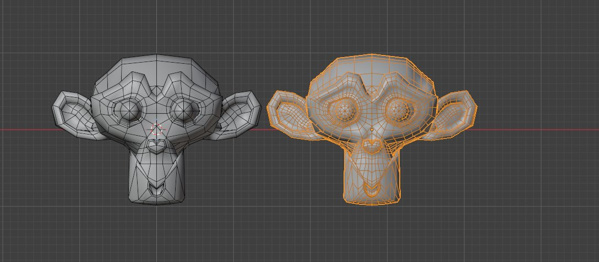
試す前に 元と対応するUVを使う。任意の別顔への転写を保証する手順ではない。
1. このアドオンでできること
シェイプキー（形の変化）を作る・整理する・動かす道具と、顔の収録を焼き込む道具を、サイドバーの 1 枚のパネルにまとめたアドオンです。
- メッシュの基準の形（Basis）を記録し、そこからの差を「マップ」としていくつも保存する
- マップの一覧を押して形を切り替えながら編集し、名前変更・並べ替え・削除をする
- 保存したマップを、同じメッシュのシェイプキー、または別々のオブジェクトとして書き出す
- 選んだ頂点の形を、Basis を境に反転する・片側の変化を反対側へ写す
- マップを別のファイルに保存し、別の .blend や別のメッシュへ持って行く
- 今あるシェイプキーを読み込み、マップとして作り直す
- シェイプキーを全部残したまま、選んだモディファイアを適用する
- ボーンやオブジェクトの位置・回転・スケールで、シェイプキーを 0〜1 で動かすドライバーの式を作る
- ジョイスティック式の X/Y のハンドルで、複数のシェイプキーを混ぜて動かす
- ハンドルの動きにキーを打ち、ふつうのシェイプキーのキーへベイクする
- 全オブジェクトのハンドルの位置をプリセットとして保存・呼び出しする
- 他のアプリから UDP で X/Y の値を受け取り、ハンドルを動かす
- ウェブカメラで顔を読み、ハンドルをその場で動かす（内蔵フェイストラッカー）
- 収録した ARKit 52 表情の CSV や録画の動画を、顔リグの骨かシェイプキーへアクションとして焼き込む（RAW と EDIT の 2 つ）
- 頭の回転の CSV を、頭のコントローラーの骨へ焼き込む
- 顔リグを作るための初期形状の生成・補正キーの作成・表情プリセットの保存と適用をする
- 舌が歯や顔に食い込んでいないかを、三角形の交差の数で調べる
- ARKit のスライダーで動く顔リグを、手付け用に焼く／表情モードへ戻す
- 校正表を作り、取り込みの値の届き方を点検する
- 選んだ部品の材質を複製して、色やリムの光を補正する
- 顔の表情のシェイプキーを、1 つのメッシュの上で切り替えながら作る
- シェイプキーのあるキャラクターに、スムーズなどのモディファイアを適用する
- ボーンの動きに合わせてシェイプキーを自動で動かす（補正の形など）
- ジョイスティックで口や目の形を混ぜて、表情のアニメーションの下書きを作る
- ウェブカメラや外部アプリの入力で、シェイプキーをその場で動かす
- 顔の収録（ARKit の CSV・動画）を顔リグへ焼き込み、手で直す
ひと目で分かる例
このアドオンを使うと、画面は次のように変わります。くわしい操作は 5 章の各機能の「実例」で説明します。
実例形を「マップ」に保存して、一覧で切り替える（スザンヌで試した様子）
基準の形を記録し、口の周りの両側を持ち上げた形を「笑顔」のマップとして保存します。一覧の行を押すだけで、元の形と笑顔の形を行き来できます。


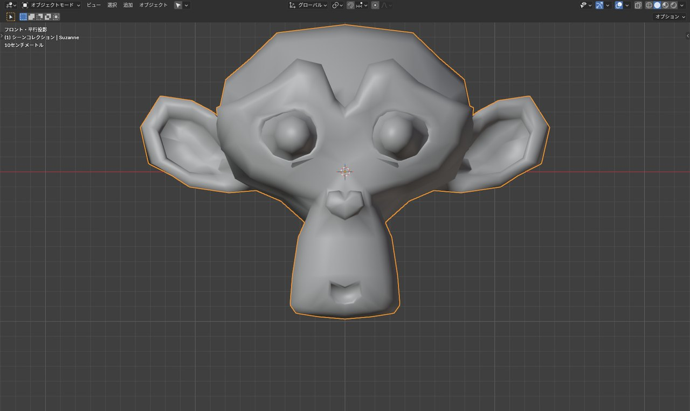

- スザンヌを選び、「Basis と新規マップ」の「ベースを設定」を押して確定します。
- 編集モードで口の周りの両側の頂点を持ち上げ、オブジェクトモードに戻ります。
- 「新規」を押し、名前に「笑顔」と入れて確定します。
- 「マップ」の一覧で「Basis」を押すと元の形に、「笑顔」を押すと笑顔に切り替わります。
見どころ：口の周りを見てください。「笑顔」では口の両側が持ち上がって V 字のしわができ、「Basis」では元のなめらかな形に戻ります。シェイプキーを作らなくても、同じメッシュに複数の形を保存できます。
実例1 つのジョイスティックで 2 つの表情を動かす（シェイプキー smile・open を持つスザンヌで試した様子）
グループを作り、右（X=1）に smile、下（Y=-1）に open を結び付けます。ハンドルの位置を変えるだけで、2 つのシェイプキーの値がまとめて変わります。
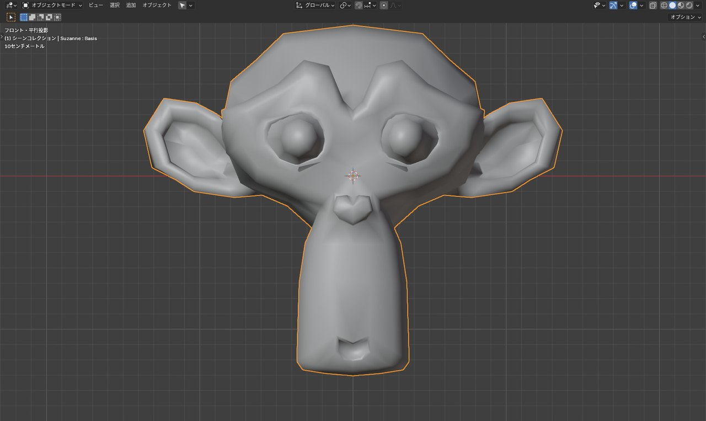
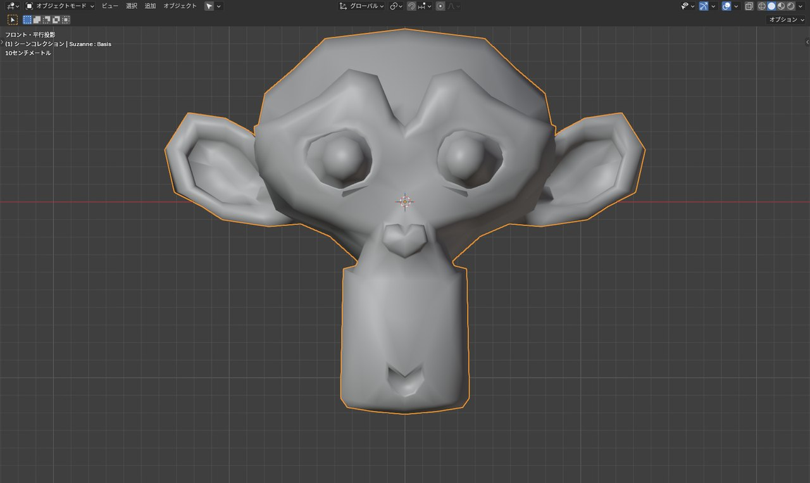
- 「グループ」で「最初のグループを作成して設定開始」を押します。
- 「マッピング」の一覧の横にある ＋ ボタンで行を 2 つ足し、行を選んで「マッピング設定」で 1 行目を smile・X 1・Y 0、2 行目を open・X 0・Y -1 にします。
- 「ハンドル / 値」の「値を編集」を押し、X 値と Y 値を入れて OK を押します。
見どころ：ハンドルを右へ動かすと口の両側が持ち上がり（smile）、下へ動かすとあごが下へ伸び（open）、右下では両方が混ざります。シェイプキーを 1 本ずつ動かさなくても、2 つの数値（X と Y）で表情を選べます。
2. 目玉の機能
このアドオンならではの機能を、図に番号を付けて説明します。図の中の番号と、図の下の一覧の番号が対応しています。図を押すと大きく表示されます。設定の一つ一つは 5 章の各見出しで説明します。
2-1. マップ（形を保存して、一覧で切り替える）いちばんの売り
表情などの形を作るたびにシェイプキーを足していくと、一覧が長くなり、値の管理も増えます。「マップ」は、基準の形（Basis）からの差を、このアドオンの中に保存した物です。シェイプキーを作らなくても、1 つのメッシュに形をいくつも保存でき、一覧の行を押すだけで、その形に切り替わります。できたマップは、ふつうのシェイプキーや別々のオブジェクトに書き出せます。ファイルに保存すれば、頂点の並びが違う別のメッシュへも、UV を手がかりに持って行けます。下の 2 枚は、シェイプキー smile・open を持つスザンヌで「ベースを設定」と「書き出し」の「読み込み」を行い、一覧の smile と open を押した所です。
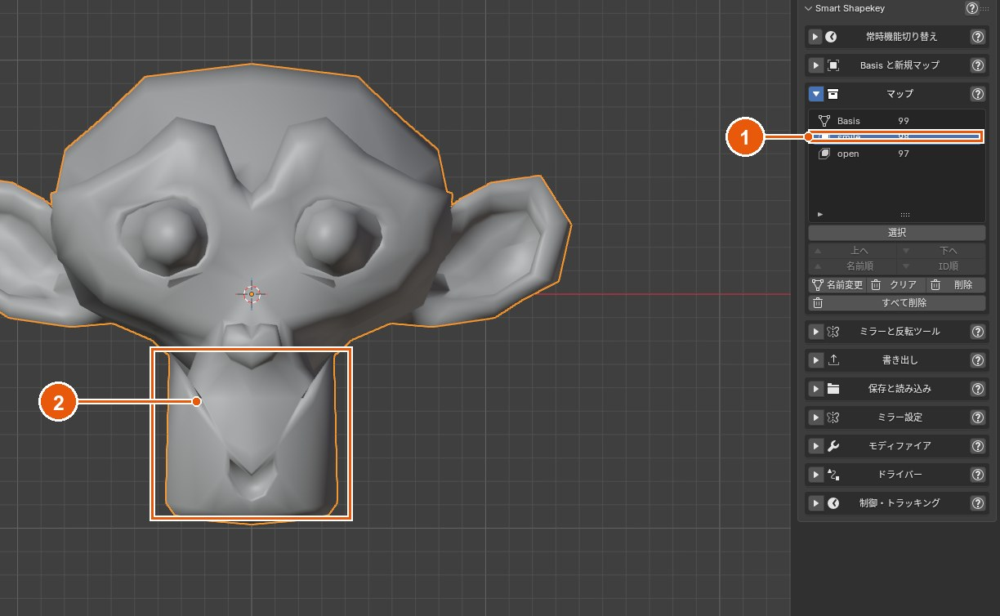
- 1押した行：押した行が選ばれ、その形に切り替わる
- 2口の両側：smile の形になり、口の両側が持ち上がる
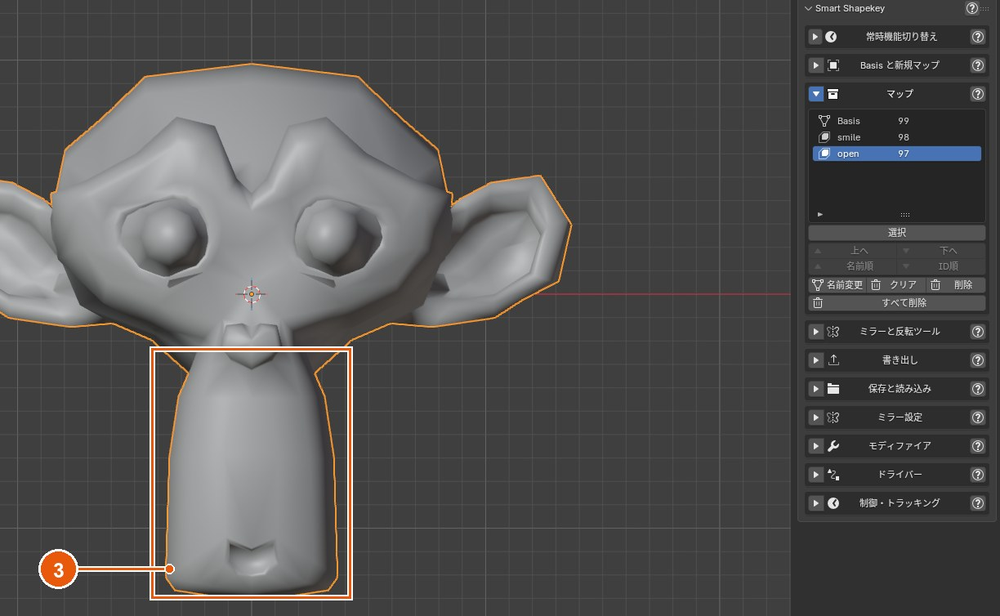
- 3あご：open の形になり、あごが下へ伸びる
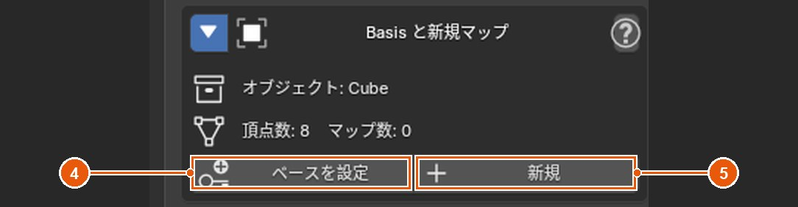
- 4ベースを設定：今の形を基準の形（Basis）として記録する。最初に 1 回押す
- 5新規：今の形から新しいマップを作る。名前を入れて確定する
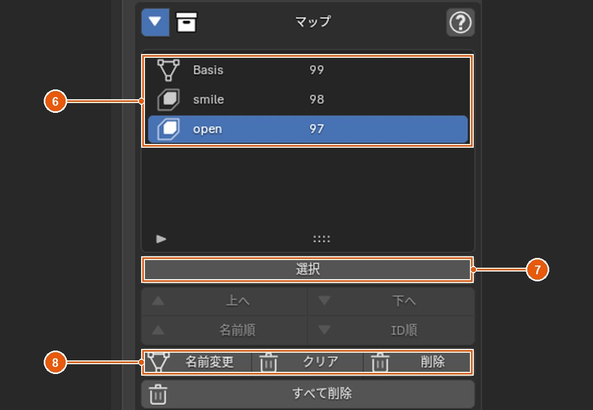
- 6マップの一覧：行を押すと、その形に切り替わる。名前の右の数字はチャンネル番号。Basis（メッシュのアイコン）は消せない
- 7選択／編集：ふだんは「選択」（行を押すと形が切り替わる）。押して「編集」にすると、形を変えずに行にチェックを付けたり、すぐ下の「上へ」「名前順」などで並べ替えたりできる
- 8名前変更／クリア／削除：選んでいるマップに行う。「クリア」は Basis と同じ形に戻す。Basis を選んでいる間は押せない

- 9保存元：「笑顔」のマップを作り、「全て保存」でファイルに書いた
- 10細分化した別のメッシュ：頂点の数も並びも違うが、読み込むと左と同じ口の形になる
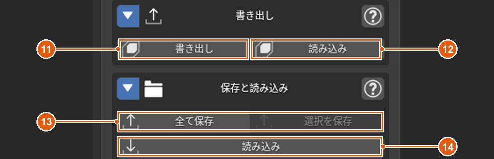
- 11書き出し：マップを、このメッシュのシェイプキーか、マップごとの新しいオブジェクトにする（「出力先」で選ぶ）
- 12読み込み（「書き出し」の欄）：今あるシェイプキーを、マップとして読み込む。上の 2 枚のマップはこれで作った
- 13全て保存／選択を保存：マップをファイル（.skmuv）に書く。別の .blend や別のメッシュへ持って行く時に使う
- 14読み込み（「保存と読み込み」の欄）：ファイルのマップを、選んでいるメッシュに入れる。入れる先のメッシュには UV マップが要る
- メッシュを基準の形（例：無表情）にして、④「ベースを設定」を押し、確定する。
- ⑤「新規」を押して名前を入れ、編集モードなどで、作りたい形に直す。
- ⑥ の一覧で別の行を押すと、今の編集がそのマップに保存され、押した行の形に切り替わる。
- ふつうのシェイプキーが要る時は ⑪「書き出し」。別の .blend やメッシュへ持って行く時は ⑬ でファイルに保存し、入れる先のメッシュを選んで ⑭ で読み込む。
- 「ベースを設定」の後は、頂点の数とつながりを変えない。オートキー（自動キー挿入）がオンの間は、マップを切り替えられない。
- 書き出しに使うのは保存済みのマップだけ。最後の編集の後に別のマップへ切り替えないと、その編集は入らない。
- 頂点の並びが違うメッシュへは、UV の開き方が同じ時だけ入る。開き方が違うと、知らせを出して止まり、メッシュは変わらない。
- マップはメッシュと一緒に .blend に保存される。ファイル（.skmuv）に書くのは、ほかへ持って行く時だけでよい。
2-2. シェイプキー軸コントロール（ジョイスティックで表情を混ぜる）図で見る
ジョイスティックのような X/Y のハンドル 1 つで、いくつものシェイプキーをまとめて動かします。「マッピング」の行で、シェイプキーごとに「ハンドルがどこに来た時に最大になるか」を決めておくと、ハンドルの位置を変えるだけで、目標に近いシェイプキーが効き、間の位置では混ざります。シェイプキーを 1 本ずつ動かさなくても、2 つの数値（X と Y）で表情を選べ、X と Y にはキーやドライバーを付けられます。下の 4 枚は、右（X 1）に smile、下（Y -1）に open を結び付けたグループで、ハンドルを動かした所です。

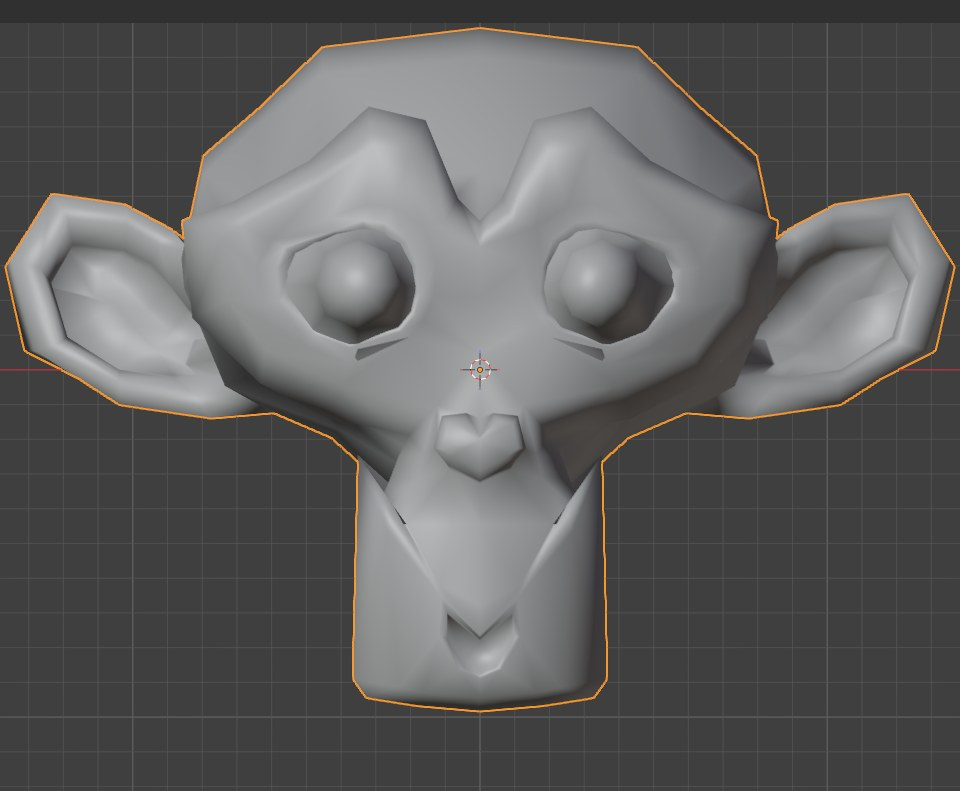
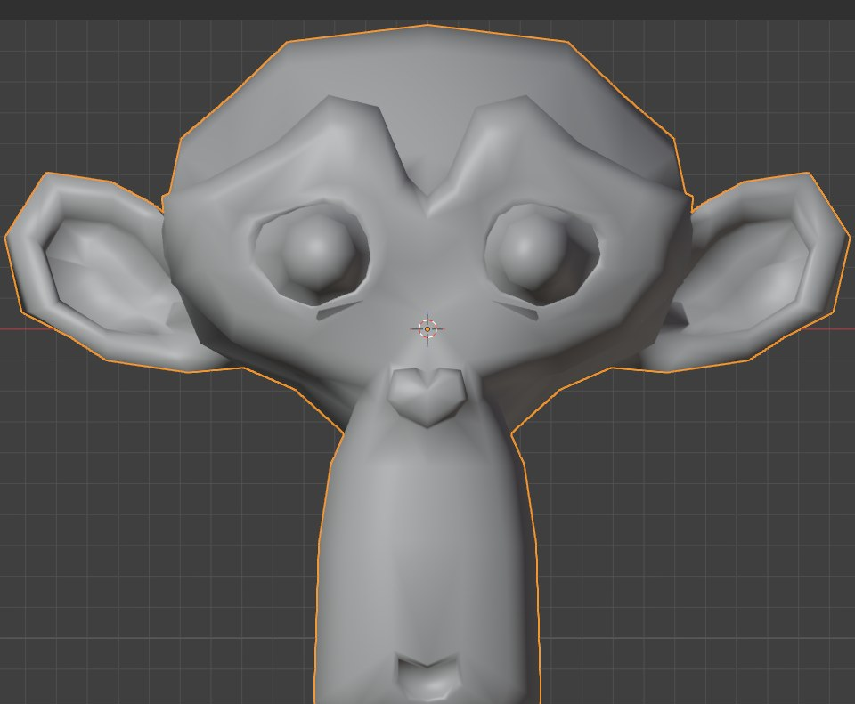

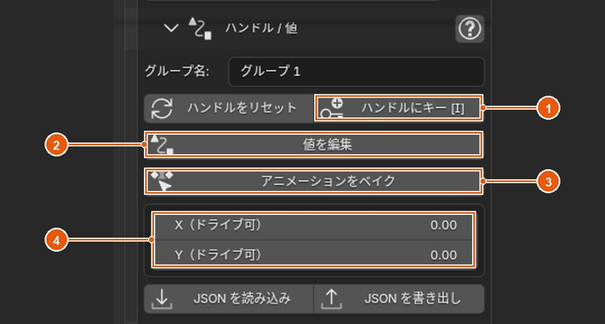
- 1ハンドルにキー [I]：今のフレームに、今の X/Y のキーを打つ
- 2値を編集：X と Y を数値で入れる窓を開く。上の右・下・右下は、これで値を入れた
- 3アニメーションをベイク：ハンドルで動かした結果を、ふつうのシェイプキーのキーに変える。FBX や glTF へ書き出す時に使う
- 4X／Y：今のハンドルの位置（-1〜1）。キーやドライバーを付けられる
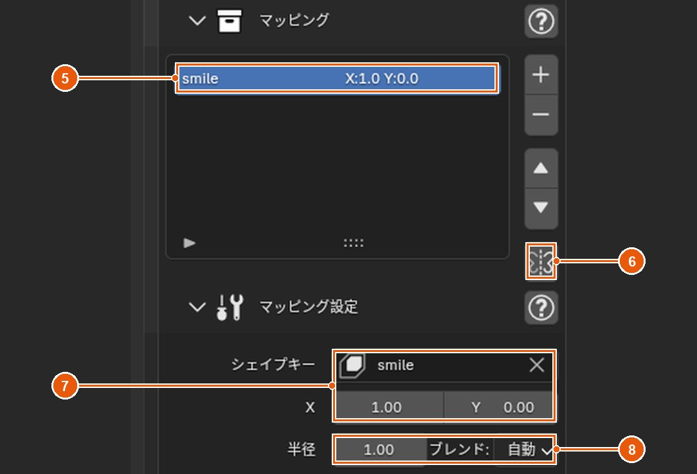
- 5マッピングの行：1 行で、1 つのシェイプキーを目標の X/Y に結び付ける。右の「＋」で行を足す
- 6ミラーのボタン：.L／.R のような対の名前のシェイプキーから、左右対称の行を作る
- 7シェイプキーと X／Y：この行で動かすシェイプキーと、それを最大にしたいハンドルの位置
- 8半径／ブレンド：目標からどこまで離れても効くか（既定 1、大きいほど広く効く）と、弱まり方（自動・ボックス減衰・放射状減衰・X 軸・Y 軸）
- 動かすシェイプキーを持つメッシュを選び、「グループ」で「最初のグループを作成して設定開始」を押す。
- ⑤ の一覧の横の「＋」で行を足し、行を選んで ⑦ でシェイプキーと目標の X/Y を決める（上の例は smile を X 1・Y 0、open を X 0・Y -1）。
- ④ の X／Y を動かすか、②「値を編集」で数値を入れる。動きを残す時は ①でキーを打つ。
- FBX や glTF へ書き出す時は、③「アニメーションをベイク」で、ふつうのシェイプキーのキーに変える。
- ベイクしたキーは、後でマッピングを変えても追従しない。変えた後はベイクし直す。
- 1 つのグループが、独立した 1 つの X/Y のコントローラー。グループを足すと、別のハンドルを持てる。
- 「常時機能切り替え」の「シェイプ軸 HUD」を「有効」にすると、3D ビューにジョイスティックが出て、値を見ながら動かせる。HUD でドラッグ中に Esc か右クリックを押すと、操作の前に戻る。
くわしい設定：5-14. シェイプキー軸コントロール、5-16. ハンドル / 値、5-17. マッピング、5-18. マッピング設定
2-3. シェイプキー保持で適用図で見る
シェイプキーを持つメッシュにモディファイアを適用しようとすると、Blender 標準の「適用」は断ります。「シェイプキー保持で適用」は、選んだモディファイアを適用し、シェイプキーを全部残します。先に一時的な複製の上で確かめ、全部うまくいった時だけ元のメッシュを変えます。下の 3 枚は、シェイプキー smile・open を持つスザンヌに、サブディビジョンサーフェス（レベル 1）を適用した前と後です。

- 1目のまわりの線（前）：線の間が広い。なめらかな面はモディファイアが見せている形で、メッシュはまだ元のまま
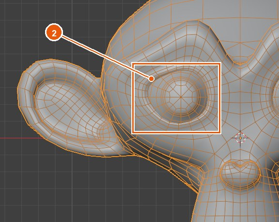
- 2同じ所の線（適用の後）：形は変わらず、線の間が狭くなった。サブディビジョンサーフェスの分が、メッシュそのものになった
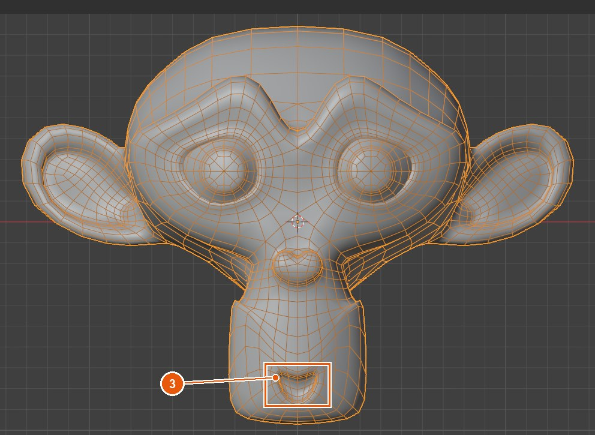
- 3口の両側：適用の後もシェイプキー smile が残っていて、1 にすると口の両側が持ち上がる
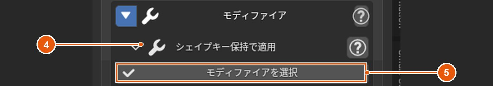
- 4シェイプキー保持で適用：「モディファイア」の中の見出し。左の三角で開く
- 5モディファイアを選択：モディファイアごとのチェックがある窓を開く。チェックした物を適用し、外した物は残す
- シェイプキーとモディファイアを持つメッシュを選び、オブジェクトモードにする。
- 「モディファイア」の ④「シェイプキー保持で適用」を開き、⑤「モディファイアを選択」を押す。
- 適用したいモディファイアだけにチェックを付け、OK を押す。
- サブディビジョンサーフェス・ミラー・ソリッド化のように、頂点が増えても、どのキーでも同じメッシュになる物は使える。デシメート・ブーリアン・ベベル・リメッシュなど、キーごとに違うメッシュを作る物は、確認で失敗し、元を変えずに中止する。
- マップのあるメッシュには使えない（要る時は、書き出してから「すべて削除」を押す）。
- Ctrl+Z で戻せる。シェイプキーが多いと時間がかかる。
くわしい設定：5-10. シェイプキー保持で適用
3. 準備
アドオンの入れ方・画面を日本語にする方法・N パネルと「？」ヘルプの共通の使い方は、「SmartTools 全体仕様書」にまとめています。先にそちらの 2〜5 章を読んでください。
| 入れる ZIP | SmartShapekeySuite_1.0.0.zip |
|---|---|
| Blender の画面での名前 | Smart Shapekey |
| 動く Blender | 5.1.2 |
4. 画面の場所
3D ビューのサイドバー（N パネル）の「Smart Shapekey」タブに、「Smart Shapekey」パネルが 1 枚出ます。アクティブなオブジェクトがメッシュで、オブジェクトモードか編集モードの時に中身が出ます。同じ中身のパネルは、画像エディターなど他のエディターのサイドバーの「Smart Shapekey」タブにも出ます。
| 出る画面 | 3D ビュー（3D ビューポート） |
|---|---|
| タブ | Smart Shapekey |
| モード | オブジェクトモード / 編集モード |
- インストール・日本語化・N パネルの開き方・「？」ヘルプの共通の使い方は、全体仕様書の該当の章を見てください。
- 3D ビューでメッシュのオブジェクトを 1 つ選びます。
- オブジェクトモードか編集モードにします。
- サイドバーの「Smart Shapekey」タブを押します。
- 使いたい見出しの左の三角を押して開きます。

5. 機能の説明
画面の上から順に、見出しごとに説明します。見出しの右の「？」を押すと、同じ内容の説明が画面にも出ます。青い枠の「実例」は、スザンヌなどの簡単なモデルで実際に操作し、3D ビューでの変化を前と後で並べたものです。
5-1. Smart Shapekey（パネル全体）
このアドオンのすべての欄が入ったパネルです。上から「常時機能切り替え」「Basis と新規マップ」「マップ」「ミラーと反転ツール」「書き出し」「保存と読み込み」「ミラー設定」「モディファイア」「ドライバー」「制御・トラッキング」の順に並びます。
場所3D ビュー ＞ サイドバー ＞ 「Smart Shapekey」タブ
| 表示 | 働き |
|---|---|
| 見出しの三角 | 押すとその欄が開いたり閉じたりします。開いた状態は覚えられます。 |
| 見出しの「？」 | その欄の使い方のポップアップを開きます。開いてもシーンは変わりません。 |
| 「メッシュオブジェクトを選択してください。」 | アクティブなオブジェクトがメッシュでない時に出る 1 行です。メッシュを選ぶと欄が出ます。 |
| 「オブジェクトモードまたは編集モードに切り替えてください。」 | スカルプトモードなど、オブジェクトモード・編集モード以外の時に出る 1 行です。 |
5-2. 常時機能切り替え
背景で動き続ける機能（HUD・UDP の受信・カメラなど）を、1 か所でまとめて入れたり切ったりする欄です。「無効」の機能は止まるので、ふだんの作業は軽いままです。
場所「Smart Shapekey」パネルのいちばん上
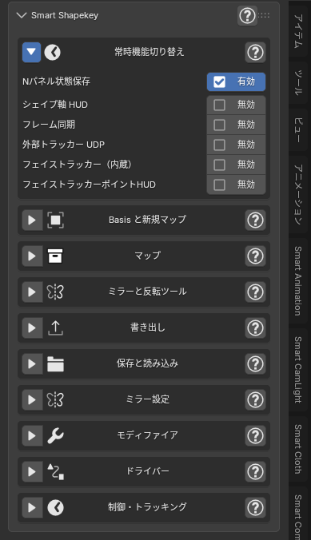
| 表示 | 働き |
|---|---|
| Nパネル状態保存 | 「有効」の間は、パネルの設定を変えるたびに Blender の設定フォルダーの JSON へ保存し、次に開いた時に戻します。既定は「有効」です。 |
| シェイプ軸 HUD | 3D ビューに、シェイプ軸のジョイスティック（HUD＝画面の上に重ねて出す操作盤）を出します。値を見ながら動かす間だけ「有効」にします。 |
| フレーム同期 | 再生やタイムラインのスクラブの時に、キーを打ったハンドルを今のフレームに合わせて更新します。軸にキーを打って再生する時だけ「有効」にします。 |
| 外部トラッカー UDP | 他のアプリから UDP（ネットワークで値を送る方式の一つ）で X/Y の値を受け取ります。送るアプリを動かしている間だけ「有効」にします。 |
| フェイストラッカー（内蔵） | ウェブカメラで顔を読み、シェイプ軸を動かします。トラッキングする間だけ「有効」にします。 |
| フェイストラッカーポイントHUD | 内蔵トラッカーが読んだ顔の点（ランドマーク）を 3D ビューに描きます。内蔵トラッカーが動いている間だけ描かれます。 |
| 「無効」／「有効」ボタン | 各行の右のボタンです。押すたびに「無効」と「有効」が切り替わります。 |
- 見出しの三角で欄を開きます。
- 使いたい機能の行の右の「無効」を押して「有効」にします。
- 使い終わったら、もう一度押して「無効」に戻します。
5-3. Basis と新規マップ
メッシュの基準の形（Basis）を記録し、今の形を新しい「マップ」として保存する欄です。マップは、Basis からの形の差をこのアドオンの中に保存した物です。
場所「Smart Shapekey」パネル ＞ 「Basis と新規マップ」
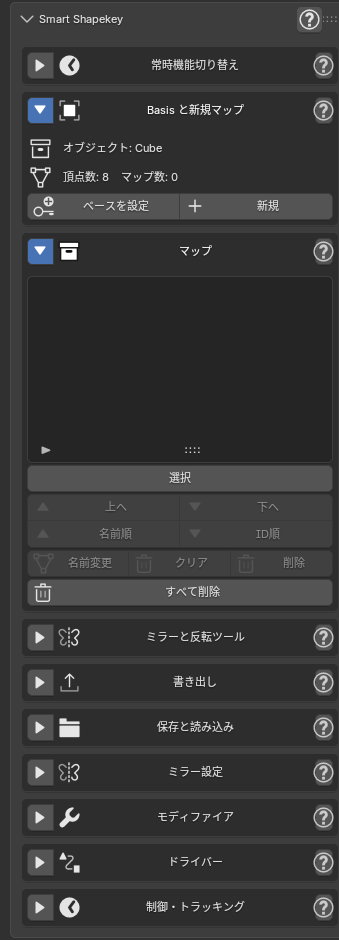
| 表示 | 働き |
|---|---|
| オブジェクト | 対象のメッシュの名前です（表示だけ）。 |
| 頂点数 / マップ数 | 対象の頂点の数と、保存したマップの数です（表示だけ）。 |
| ベースを設定 | 今の形を Basis として記録します。2 回目からは「選択ポリゴン」（編集モードで選んだ面の頂点だけを今の形にする）か「すべてのポリゴン」を選べます。既にあるマップは、見た目の形が変わらないように差を計算し直します。最初は「すべてのポリゴン」になります。見えているメッシュは変わりません。 |
| 新規 | 今のメッシュの形から新しいマップを作り、そのマップを選んだ状態にします。名前を入れて確定します。空の名前は使えません。先に「ベースを設定」が要ります。 |
- メッシュを基準の形（例：無表情）にします。
- 「ベースを設定」を押し、確定します。
- 「新規」を押し、名前を入れて確定します。
- 編集モードなどで、メッシュを作りたい形に直します。
- 「マップ」の一覧で別のマップを押すと、今の編集がそのマップに保存されます。
変わる所：マップのデータはメッシュと一緒にファイルの中に保存されます。.blend を保存すれば残ります。
5-4. マップ
保存したマップの一覧です。行を押すとその形に切り替わります。名前・並び順・消去もここで管理します。
場所「Smart Shapekey」パネル ＞ 「マップ」
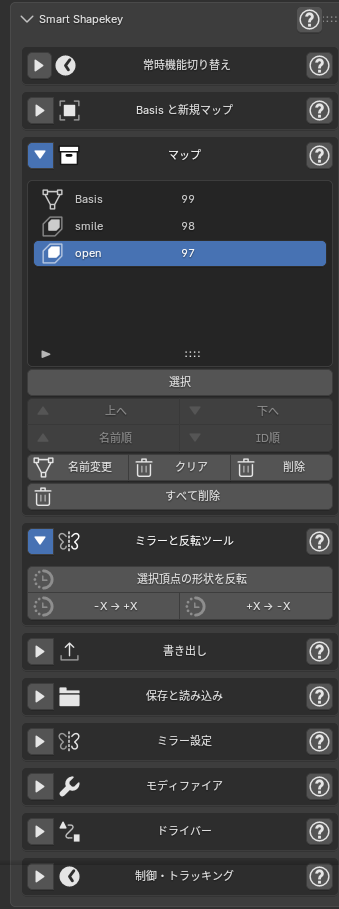
| 表示 | 働き |
|---|---|
| マップの一覧 | 行ごとにマップ名とチャンネル番号が出ます。Basis はメッシュのアイコンで、消せません。 |
| 選択 / 編集（モードのボタン） | 「選択」は行を押すと形が切り替わる状態です。「編集」は形を変えずに、行にチェックを付けたり並べ替えたりする状態です。ふだんは「選択」です。 |
| 上へ / 下へ | 「編集」の時だけ使えます。選んだ行を 1 つ上 / 下へ動かします。書き出しはこの順になります。 |
| 名前順 / ID順 | 「編集」の時だけ使えます。名前の順、またはチャンネル番号の順（作った順）に並べます。形とチャンネル番号は変わりません。 |
| 名前変更 | 選んでいるマップの名前を変えます。同じ名前（大文字・小文字の違いだけの名前も含む）は使えません。 |
| クリア | 選んでいるマップを Basis と同じ形に戻します。「選択ポリゴン」か「すべてのポリゴン」を選びます。 |
| 削除 | 確認の後、選んでいるマップを消します。 |
| すべて削除 | 確認の後、このメッシュのマップのデータを全部消します。今見えている形はそのまま残ります。シェイプキーのあるメッシュでは、シェイプキーの混ざりの形へ戻ります。 |
実例形を「マップ」に保存して、一覧で切り替える（スザンヌで試した様子）
基準の形を記録し、口の周りの両側を持ち上げた形を「笑顔」のマップとして保存します。一覧の行を押すだけで、元の形と笑顔の形を行き来できます。
- スザンヌを選び、「Basis と新規マップ」の「ベースを設定」を押して確定します。
- 編集モードで口の周りの両側の頂点を持ち上げ、オブジェクトモードに戻ります。
- 「新規」を押し、名前に「笑顔」と入れて確定します。
- 「マップ」の一覧で「Basis」を押すと元の形に、「笑顔」を押すと笑顔に切り替わります。
見どころ：口の周りを見てください。「笑顔」では口の両側が持ち上がって V 字のしわができ、「Basis」では元のなめらかな形に戻ります。シェイプキーを作らなくても、同じメッシュに複数の形を保存できます。
実例マップの右半分だけを元の形に戻す（スザンヌで試した様子）
「クリア」で「選択ポリゴン」を選ぶと、選んだ面の部分だけ、マップを基準の形に戻せます。片側だけの表情を作る時に便利です。

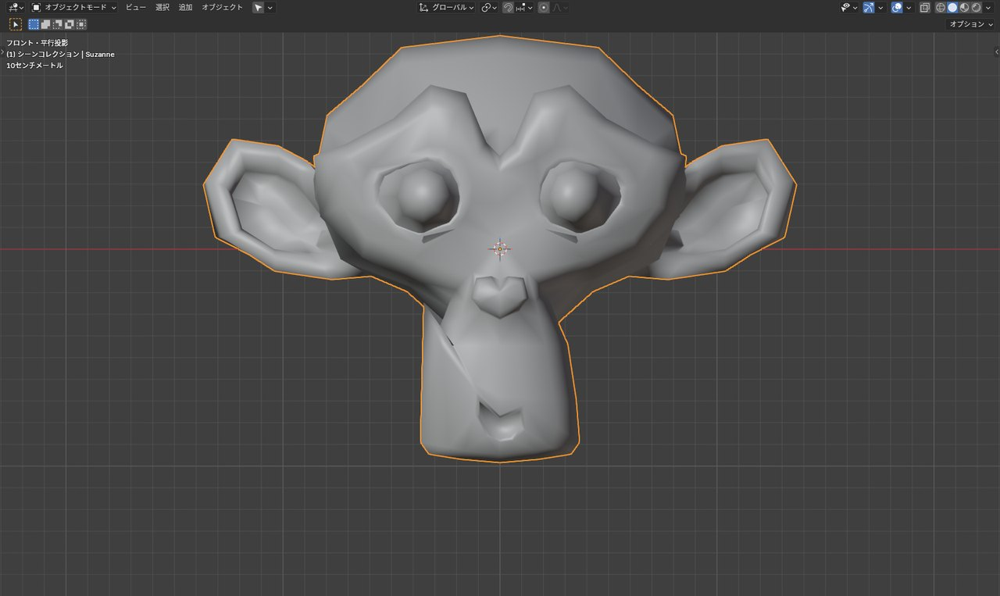
- 「笑顔」のマップを選んだ状態で、編集モードにします。
- 顔の右半分（画面の右側）の面を選びます。
- 「マップ」の「クリア」を押し、「選択ポリゴン」を選んで OK を押します。
見どころ：画面の右側だけ、持ち上げた口の周りが元の形に戻り、左側は持ち上がったままです。選ばなかった部分の形はそのまま残ります。
実例シェイプキーのあるメッシュでも、マップを押して形を見る（シェイプキー smile・open を持つスザンヌで試した様子）
シェイプキーのあるメッシュでも、一覧の行を押すと、そのマップの形が 3D ビューに出ます。Basis を押すと元の形に戻ります。
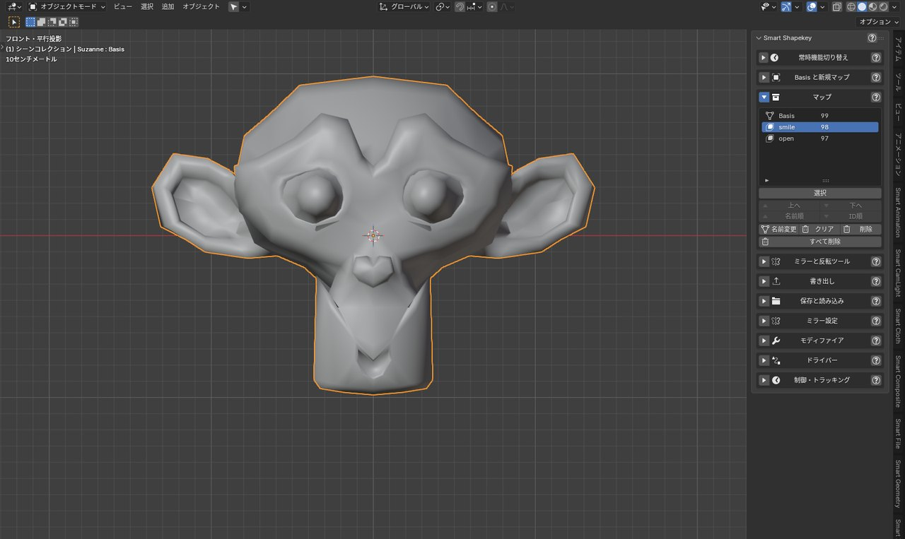
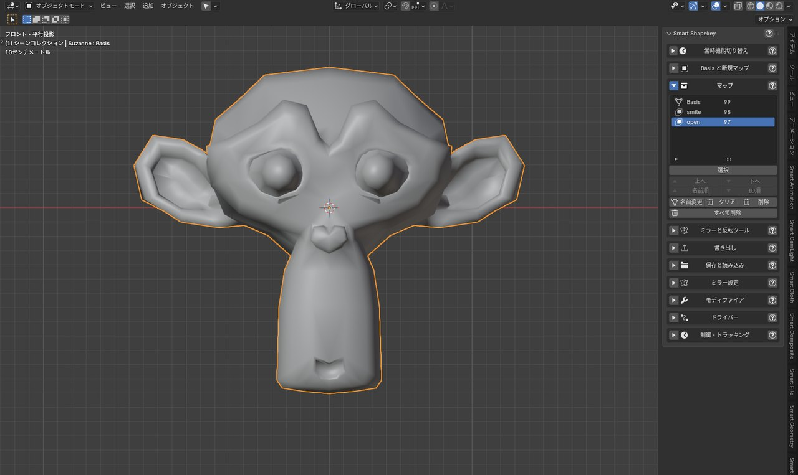

- オブジェクトモードで、シェイプキーを持つスザンヌを選びます。
- 「ベースを設定」を押して確定し、「書き出し」の「読み込み」を押して確定します。
- 「マップ」の一覧で smile、open、Basis の順に押します。
見どころ：口の周りを見てください。smile では口の両側が持ち上がり、open ではあごが下へ伸び、Basis で元に戻ります。サイドバーの「マップ」の一覧で、押した行が選ばれています。
5-5. ミラーと反転ツール
選んでいるマップの形を、選択した頂点について直します。Basis を境に変化の向きを反転するか、片側の変化を反対側へ写します。
場所「Smart Shapekey」パネル ＞ 「ミラーと反転ツール」
| 表示 | 働き |
|---|---|
| 選択頂点の形状を反転 | 選んだ頂点が、Basis の位置を境に反対側へ動きます。持ち上げた形は、同じ量だけ下げた形になります。 |
| -X → +X / +X → -X | 矢印が始まる側で選んだ頂点の変化を、向きを反転して、反対側の対応する頂点へ写します。文字は「ミラー設定」の軸に合わせて変わります。反対側の頂点は選ばなくてかまいません。中心線の上の頂点は変わりません。 |
- 「マップ」の一覧で、Basis 以外のマップを押します。
- 編集モードで頂点を選びます。左右をそろえる時は、形を作った側を選びます（全部選んでもかまいません）。
- 「選択頂点の形状を反転」か、矢印がその側から始まるボタンを押します。
- 3D ビューで結果を確かめます。保存したマップはその場で更新されます。
実例片側だけ作った表情を、反対側へ写す（スザンヌで試した様子）
口の左側だけを持ち上げたマップを作り、「-X → +X」で右側へ写します。左右同じ形を 2 回作らずに済みます。

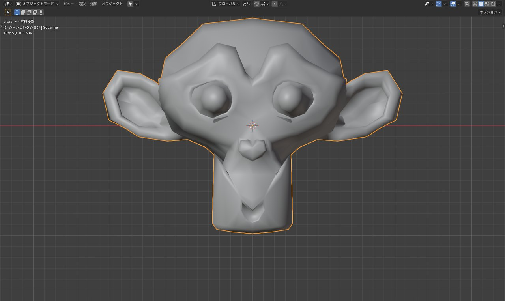
- 「ベースを設定」を押して確定します。
- 編集モードで顔の -X 側（正面から見て画面の左）の口の周りだけを持ち上げ、オブジェクトモードに戻って「新規」で「片側」のマップを作ります。
- 編集モードで全部の頂点を選びます。
- 「ミラーと反転ツール」の「-X → +X」を押します。
見どころ：口の周りを見てください。「前」では画面の左側だけが持ち上がっています。「後」では画面の右側も同じように持ち上がり、左右がそろいます。
実例笑顔を反転して、口の両端を下げる（スザンヌで試した様子）
「選択頂点の形状を反転」は、選んだ頂点を Basis の位置を境に反対側へ動かします。持ち上げた形が、下げた形になります。
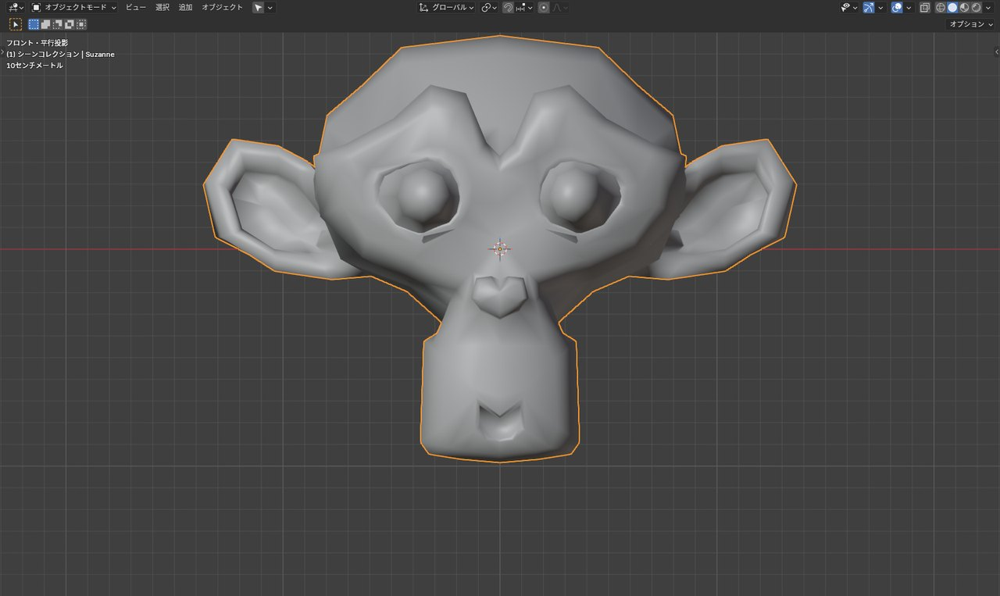
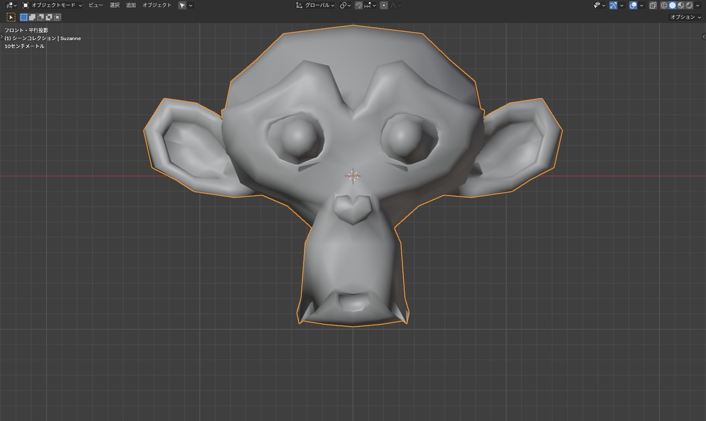
- 「笑顔」のマップを選びます。
- 編集モードで全部の頂点を選びます。
- 「ミラーと反転ツール」の「選択頂点の形状を反転」を押します。
見どころ：口の両側を見てください。上がっていた口の端が、同じ量だけ下がります。
5-6. 書き出し
保存したマップを、同じメッシュのふつうのシェイプキー、または別々のメッシュのオブジェクトにします。逆に、今あるシェイプキーをマップとして読み込むこともできます。
場所「Smart Shapekey」パネル ＞ 「書き出し」
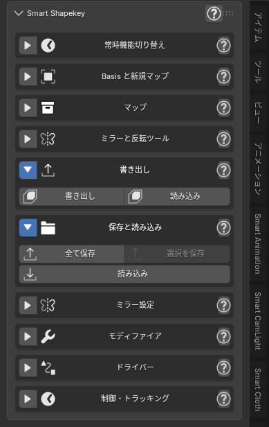
| 表示 | 働き |
|---|---|
| 書き出し | 書き出しのダイアログを開きます。「マップ」を「編集」にしてチェックを付けた時は、チェックしたマップだけを書き出します。何もチェックしていなければ全部です。 |
| 出力先 | ダイアログの欄です。「シェイプキー」（このメッシュのシェイプキーにする）か「オブジェクト」（マップごとに新しいオブジェクトにする）を選びます。既定は「シェイプキー」です。 |
| 同名のシェイプキーを置換 | 「シェイプキー」の時だけ使えます。オンにすると同じ名前のシェイプキーを上書きします。既定はオフです。 |
| 接頭辞 / 間隔 / 1行の個数 | 「オブジェクト」の時だけ使えます。新しいオブジェクト名の頭の文字、オブジェクト同士の距離（既定 10）、1 列に並べる数（既定 5）です。オブジェクトはアクティブなオブジェクトの位置から並びます。 |
| 読み込み | 確認の後、Basis 以外のシェイプキーを全部、Basis からの差としてマップに読み込みます。今あるマップ（Basis 以外）は消えて、シェイプキーから作り直されます。シェイプキーの値は 0 に、シェイプ軸のハンドルは中央に戻り、メッシュの形は Basis に戻ります。シェイプキー自体は残ります。先に「ベースを設定」が要ります。 |
- 「マップ」の一覧で別のマップを押し、最後の編集を保存します。
- 「書き出し」を押します。
- ダイアログで「出力先」などを決めて OK を押します。
変わる所：シェイプキー、または新しいオブジェクトが増えます。Ctrl+Z で消せます。
実例シェイプキーを読み込み、表情ごとの別オブジェクトに書き出す（シェイプキー smile・open を持つスザンヌで試した様子）
今あるシェイプキーをマップとして読み込み、「書き出し」で表情ごとに別のオブジェクトにします。表情の一覧を並べて見比べたい時に使います。

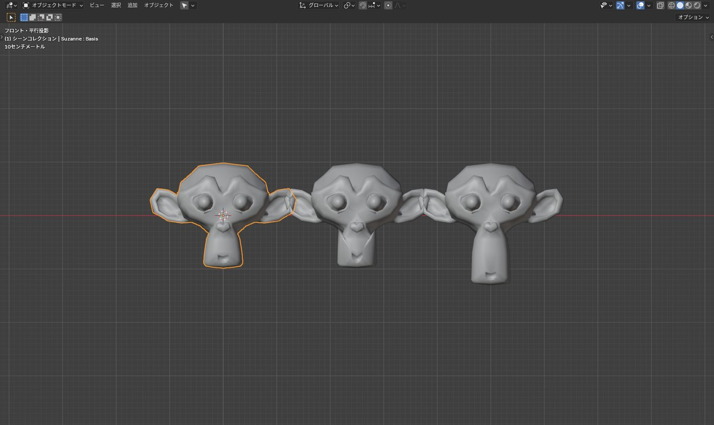
- スザンヌを選び、「ベースを設定」を押して確定します。
- 「書き出し」の「読み込み」を押して確定します（smile と open がマップになり、形は Basis に戻ります）。
- 「書き出し」を押し、「出力先」を「オブジェクト」、「間隔」を 2.5 にして OK を押します。
見どころ：元のスザンヌの横に、smile（口の両側が持ち上がった顔）と open（あごが下へ伸びた顔）の 2 つのオブジェクトが並びます。元のオブジェクトはそのまま残ります。
実例シェイプキーを読み込むと、形が Basis に戻る（シェイプキー smile・open を持つスザンヌで試した様子）
「読み込み」は、シェイプキーをマップに作り直します。シェイプキーの値は 0 になり、形は Basis に戻ります。シェイプキー自体は残ります。
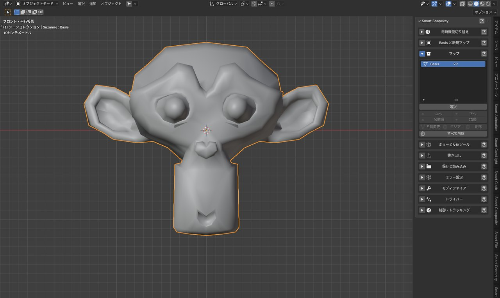
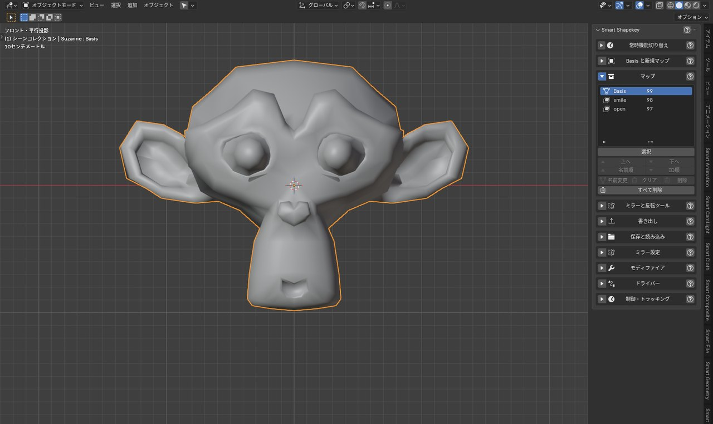
- シェイプキーの値を smile 0.7、open 0.6 にしておきます。
- 「ベースを設定」を押して確定します。
- 「書き出し」の「読み込み」を押して確定します。
見どころ：「前」は 2 つの表情が混ざった形です。「後」は元の形に戻り、サイドバーの「マップ」の一覧に smile・open の行が増えています。
5-7. 保存と読み込み
マップを別のファイル（.skmuv）へ保存し、読み戻します。別の .blend や別のメッシュへ持って行く時に使います。マップを残すだけなら要りません。マップはメッシュの中に入っているので、.blend を保存すれば残ります。
場所「Smart Shapekey」パネル ＞ 「保存と読み込み」
| 表示 | 働き |
|---|---|
| 全て保存 | Basis の形と、Basis 以外の全部のマップをファイルに書きます。マップが無い間は灰色で押せません。 |
| 選択を保存 | 「マップ」を「編集」にしてチェックを入れたマップだけを書きます。チェックが 1 つも無い間は灰色で押せません。 |
| 読み込み | ファイルを選ぶと窓が開き、読み込むマップにチェックを入れて OK を押します。このメッシュのマップと Basis を、ファイルの物に置き換え、メッシュの形も読み込んだ Basis になります。窓でチェックを外したマップは入りません。 |
| 全選択 / 全選択解除 | 読み込みの窓のボタンです。全部のチェックをまとめて入れる・外します。 |
- 保存：「全て保存」を押し、ファイルの名前と場所を決めます。ファイル選択の画面の実行のボタンは「マップファイルを保存」です。
- 同じ名前のファイルがある時は、置き換える前に確認が出ます。
- 読み込み：持って行く先のメッシュを選び、「読み込み」を押してファイルを選びます。
- 開いた窓で読み込むマップにチェックを入れ、OK を押します。
変わる所：読み込みは Ctrl+Z で戻せます。保存はファイルを書くだけなので、要らなくなったファイルは自分で消します。
実例マップをファイルに保存して、別のスザンヌへ持って行く（スザンヌ 2 体で試した様子）
左のスザンヌのマップをファイルに保存し、右のスザンヌ（頭の上を伸ばしてあります）に読み込みます。頂点の並びが同じで UV マップのあるメッシュに持って行けます。読み込むと、持って行く先の形はファイルの Basis に変わります。


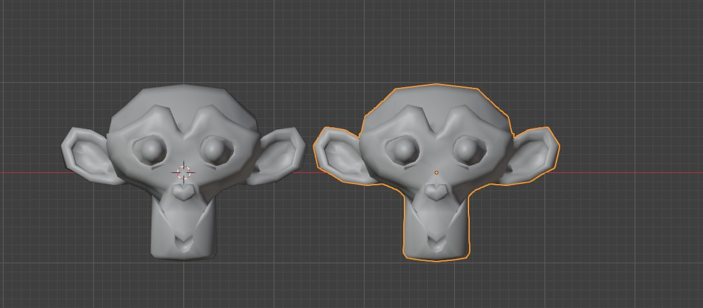
- 左のスザンヌを選び、「ベースを設定」と「新規」で「笑顔」のマップを作ります。
- 「保存と読み込み」の「全て保存」を押して、ファイルに保存します。
- 右のスザンヌを選び、「読み込み」を押してファイルを選び、開いた窓で「笑顔」にチェックがあるのを確かめて OK を押します。
- 「マップ」の一覧で「笑顔」を押します。
見どころ：右のスザンヌを見てください。伸ばしてあった頭の上が、読み込みでファイルの Basis の形に戻ります。「笑顔」を押すと、左と同じように口の両側が持ち上がります。
実例マップを、細分化した別のメッシュへ持って行く（スザンヌ 2 体で試した様子）
左のスザンヌのマップをファイルに保存し、右の細分化したスザンヌに読み込みます。頂点の並びが違っても、UV の開き方が同じなら、UV を手がかりに形が入ります。

- 左のスザンヌを選び、「ベースを設定」と「新規」で「笑顔」のマップを作ります。
- 「保存と読み込み」の「全て保存」を押して、ファイルに保存します。
- 右の細分化したスザンヌを選び、「読み込み」を押してファイルを選び、開いた窓で OK を押します。
- 「マップ」の一覧で「笑顔」を押します。
見どころ：右のスザンヌの細かいワイヤーを見てください。頂点の数は多いままで、口の両側が左と同じように持ち上がります。
実例UV の開き方が違うメッシュには、読み込みが止まる（スザンヌ 2 体で試した様子）
右のスザンヌは細分化してあり、UV も半分の大きさに縮めてあります。頂点の並びも UV の開き方も違うので、そのまま読み込むと形が崩れます。この時、読み込みは知らせを出して止まり、メッシュは変わりません。


- 左のスザンヌのマップを「全て保存」でファイルに保存します。
- 右のスザンヌを選び、「読み込み」を押してファイルを選び、開いた窓で OK を押します。
- 「このメッシュの UV の開き方がファイルと違うので、読み込むと形が崩れます。」で始まる知らせが出ます。
- UV の開き方を保存元と同じにしてから、もう一度「読み込み」を押します。
見どころ：読み込みを押す前と後で、右のスザンヌの形は同じです。UV を直して読み込み直すと、口の両側が左と同じように持ち上がります。
実例マップを、一部の面を消したメッシュへ持って行く（スザンヌ 2 体で試した様子）
右のスザンヌは左と同じ物から両耳の先を消してあります。頂点の並びは違いますが、残った所の UV と形は左と同じなので、読み込めます。

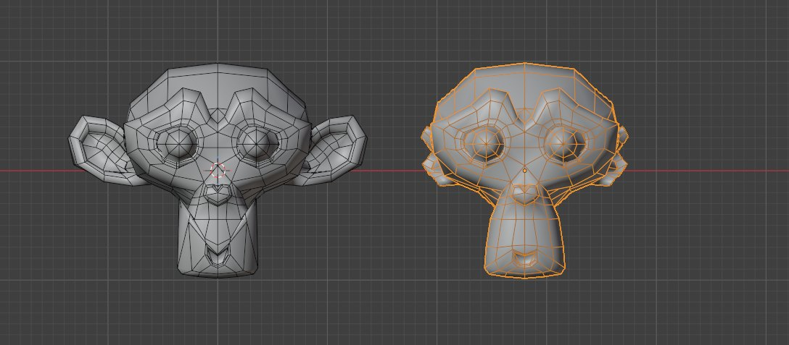

- 左のスザンヌのマップを「全て保存」でファイルに保存します。
- 右のスザンヌを選び、「読み込み」を押してファイルを選び、開いた窓で OK を押します。
- 「マップ」の一覧で「笑顔」を押します。
見どころ：耳の先が無い右のスザンヌでも、口の両側が左と同じように持ち上がります。
実例保存元の UV が重なっていると、頂点の並びが違うメッシュには読み込みが止まる（スザンヌ 2 体で試した様子）
左のスザンヌは、左右の UV を同じ場所に重ねてあります。同じ UV の位置に顔の右と左の両方があるので、細分化した右のスザンヌへは、どちらの位置か決められません。この時、読み込みは知らせを出して止まります。


- 左のスザンヌのマップを「全て保存」でファイルに保存します。
- 右の細分化したスザンヌを選び、「読み込み」を押してファイルを選び、開いた窓で OK を押します。
- 「保存元のメッシュの UV が重なっているので、」で始まる知らせが出ます。
見どころ：読み込みを押す前と後で、右のスザンヌの形は同じです。UV が重ならないメッシュから保存すれば読み込めます。頂点の並びが同じメッシュへは、UV が重なっていても入ります。
5-8. ミラー設定
「ミラーと反転ツール」の「-X → +X」「+X → -X」のボタンが使う、鏡の面の設定です。メッシュごとに値を持ちます。値を変えただけでは、メッシュは変わりません。
場所「Smart Shapekey」パネル ＞ 「ミラー設定」
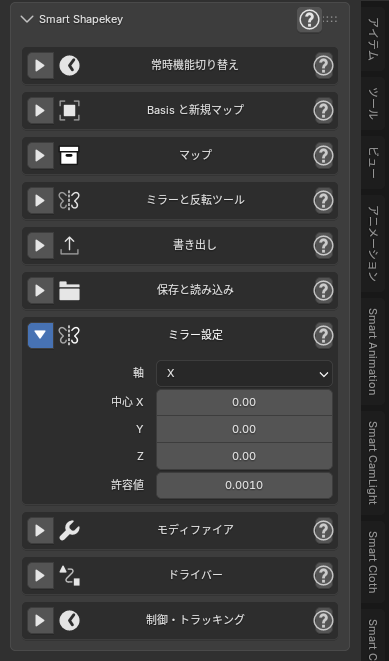
| 表示 | 働き |
|---|---|
| 軸 | 左右が向かい合う軸です。X・Y・Z から選びます。既定は X です。 |
| 中心 X / Y / Z | 鏡の面の中心の座標（メッシュのローカル座標）です。使うのは選んだ軸の値だけです。既定は 0 です。 |
| 許容値 | 反対側の対応する頂点を探す時に許す距離です。既定は 0.001 です。モデルの左右が少しずれていて写らない時だけ上げます。 |
5-9. モディファイア
モディファイア（メッシュに後から掛ける変形や加工）の道具をまとめた欄です。中に「シェイプキー保持で適用」があります。
場所「Smart Shapekey」パネル ＞ 「モディファイア」
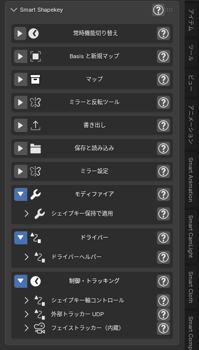
| 表示 | 働き |
|---|---|
| シェイプキー保持で適用 | 中の見出しです。左の三角で開くと使えます。 |
5-10. シェイプキー保持で適用
シェイプキーを持つメッシュに、選んだモディファイアを適用し、シェイプキーを全部残します。Blender 標準の「適用」はこの場合を断ります。先に一時的な複製の上で確かめ、全部うまくいった時だけ元のメッシュを変えます。
場所「モディファイア」 ＞ 「シェイプキー保持で適用」
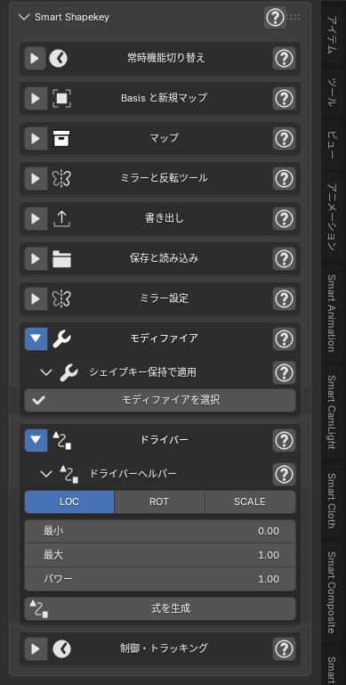
| 表示 | 働き |
|---|---|
| モディファイアを選択 | モディファイアごとのチェックがあるダイアログを開きます。チェックした物を適用し、外した物はそのまま残します。 |
| 状態の 1 行 | 条件に合わない時に「シェイプキーがありません。」「オブジェクトモードに切り替えてください。」「適用するモディファイアがありません。」などが出ます。 |
- シェイプキーとモディファイアを持つメッシュを選び、オブジェクトモードにします。
- 「モディファイアを選択」を押します。
- 適用したいモディファイアだけにチェックを付け、OK を押します。
変わる所：選んだモディファイアが一覧から消え、メッシュに反映されます。Ctrl+Z で戻せます。
実例シェイプキーを残したまま、細分化を適用する（シェイプキー smile・open を持つスザンヌで試した様子）
Blender 標準の「適用」は、シェイプキーのあるメッシュでは断られます。「シェイプキー保持で適用」なら、サブディビジョンサーフェスのように頂点が増えるモディファイアも適用でき、シェイプキーは全部残ります。
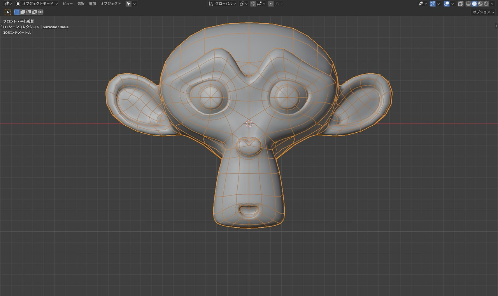
- シェイプキーを持つスザンヌに、サブディビジョンサーフェス（レベル 1）を足します。
- 「シェイプキー保持で適用」の「モディファイアを選択」を押します。
- モディファイアにチェックを付けて OK を押します。
- シェイプキー smile の値を 1 にして形を確かめます。
見どころ：ワイヤーの線を見てください。適用の後はメッシュそのものが細かくなっています。そのあと smile を 1 にすると、口の両側が持ち上がり、シェイプキーが生きていることが分かります。
5-11. ドライバー
ドライバー（ある値を、別の値から自動で決める仕組み）の道具をまとめた欄です。中に「ドライバーヘルパー」があります。
場所「Smart Shapekey」パネル ＞ 「ドライバー」
| 表示 | 働き |
|---|---|
| ドライバーヘルパー | 中の見出しです。左の三角で開くと使えます。 |
5-12. ドライバーヘルパー
ボーンやオブジェクトの位置・回転・スケールの値を、シェイプキーの 0〜1 の値に変える、ドライバーの式を作ります。できた式はポップアップに出るので、コピーしてドライバーに貼ります。
場所「ドライバー」 ＞ 「ドライバーヘルパー」
| 表示 | 働き |
|---|---|
| LOC / ROT / SCALE | 変数 var が読むチャンネルの種類（位置・回転・スケール）です。ROT の時は「最小」「最大」を度で入れます。 |
| 最小 | シェイプキーがまだ 0 の入力値です（動き始める値）。 |
| 最大 | シェイプキーが 1 になる入力値です。「最小」と同じ値にはできません。 |
| パワー | 動き方のカーブです。1.0 は直線、大きいとゆっくり始まり、小さいと速く始まります。既定は 1.0 です。 |
| 式を生成 | 式を作り、文字の入ったポップアップを開きます。 |
- シェイプキーの値を右クリックし、「ドライバーを追加」でドライバーを付けます。変数の名前を var にし、読みたいチャンネルを指定します。
- この欄で LOC・ROT・SCALE を選び、「最小」「最大」を決めます。
- 「式を生成」を押し、ポップアップの文字をコピーします。
- ドライバーの「式」欄に貼り付けます。
5-13. 制御・トラッキング
シェイプキーのジョイスティック式の操作と、外からの入力をまとめた欄です。中に「シェイプキー軸コントロール」「外部トラッカー UDP」「フェイストラッカー（内蔵）」があります。
場所「Smart Shapekey」パネル ＞ 「制御・トラッキング」
| 表示 | 働き |
|---|---|
| シェイプキー軸コントロール | X/Y のハンドルでシェイプキーを混ぜる欄です。 |
| 外部トラッカー UDP | 他のアプリから値を受け取る欄です。 |
| フェイストラッカー（内蔵） | 顔の収録の焼き込みと、ウェブカメラの入力の欄です。 |
5-14. シェイプキー軸コントロール
ジョイスティック式の X/Y のコントローラーを作ります。グループごとに X/Y のハンドルが 1 つあり、マッピングの行で「どの X/Y の近くで、どのシェイプキーが効くか」を決めます。
場所「制御・トラッキング」 ＞ 「シェイプキー軸コントロール」
| 表示 | 働き |
|---|---|
| リセット | 選んでいるグループのハンドルを中心へ戻します。 |
| すべてリセット | 全グループのハンドルを中心へ戻します。 |
| HUD をリセット | シェイプ軸 HUD の位置と大きさを元に戻します。 |
| ポイントドラッグ | オンにすると、HUD の中でマッピングの点を直接ドラッグできます。点を並べる時以外はオフがおすすめです。 |
- メッシュを選びます（動かすシェイプキーを持つ物）。
- 「グループ」を開き、最初のグループを作ります。
- 「マッピング」で行を足し、「マッピング設定」で行ごとにシェイプキーと目標の X/Y を決めます。
- 「ハンドル / 値」で X と Y を動かします。
実例1 つのジョイスティックで 2 つの表情を動かす（シェイプキー smile・open を持つスザンヌで試した様子）
グループを作り、右（X=1）に smile、下（Y=-1）に open を結び付けます。ハンドルの位置を変えるだけで、2 つのシェイプキーの値がまとめて変わります。
- 「グループ」で「最初のグループを作成して設定開始」を押します。
- 「マッピング」の一覧の横にある ＋ ボタンで行を 2 つ足し、行を選んで「マッピング設定」で 1 行目を smile・X 1・Y 0、2 行目を open・X 0・Y -1 にします。
- 「ハンドル / 値」の「値を編集」を押し、X 値と Y 値を入れて OK を押します。
見どころ：ハンドルを右へ動かすと口の両側が持ち上がり（smile）、下へ動かすとあごが下へ伸び（open）、右下では両方が混ざります。シェイプキーを 1 本ずつ動かさなくても、2 つの数値（X と Y）で表情を選べます。
5-15. グループ
アクティブなオブジェクトのシェイプ軸のグループを管理します。1 つのグループが、独立した 1 つの X/Y のコントローラーです。
場所「シェイプキー軸コントロール」 ＞ 「グループ」
| 表示 | 働き |
|---|---|
| 最初のグループを作成して設定開始 | グループがまだ無い時だけ出ます。押すと最初のグループができます。 |
| グループの一覧 | アクティブなオブジェクトのグループです。押すと選ばれます。 |
| ＋ / － | グループを足す / 選んだグループを消します。消すと、そのマッピングも消えます。 |
| 上下の矢印 | グループの順番を変えます。 |
5-16. ハンドル / 値
選んでいるグループのハンドルを数値で動かし、キー・ベイク・JSON の読み書きを行います。グループがある時だけ出ます。
場所「シェイプキー軸コントロール」 ＞ 「ハンドル / 値」
| 表示 | 働き |
|---|---|
| グループ名 | グループの名前です。 |
| ハンドルをリセット | X と Y を 0 に戻します。 |
| ハンドルにキー [I] | 今のフレームに、今の X/Y のキーを打ちます。 |
| 値を編集 | X/Y を正確に入れるポップアップを開きます。 |
| アニメーションをベイク | 開始フレーム・終了フレーム・ステップを決めて、ハンドルで動かした結果をふつうのシェイプキーのキーに変えます。FBX や glTF へ書き出す時に使います。ステップは 1（毎フレーム）が既定です。 |
| X（ドライブ可） / Y（ドライブ可） | 今のハンドルの位置です（-1〜1）。キーやドライバーを付けられます。 |
| JSON を読み込み / JSON を書き出し | JSON から新しいグループとして読み込む / 選んだグループのマッピングを JSON に書き出します。 |
5-17. マッピング
選んでいるグループの行の一覧です。各行で、1 つのシェイプキーを目標の X/Y の点に結び付けます。
場所「シェイプキー軸コントロール」 ＞ 「マッピング」
| 表示 | 働き |
|---|---|
| マッピングの一覧 | このグループで動かす行です。シェイプキー名と目標の X・Y が出ます。 |
| ＋ / － | 行を足す / 消します。 |
| 上下の矢印 | 行の順番を変えます。 |
| ミラーのボタン | .L / .R のような対になったシェイプキー名から、左右対称の行を作ります。 |
5-18. マッピング設定
選んだマッピングの行を編集します。どのシェイプキーを、コントローラーのどこで、どの広さで効かせるかを決めます。
場所「マッピング」 ＞ 「マッピング設定」
| 表示 | 働き |
|---|---|
| シェイプキー | この行で動かすシェイプキーです。 |
| X / Y | そのシェイプキーを最大にしたい、コントローラー上の位置です。 |
| 半径 | 目標からどこまで離れても効くかです。大きいほど広く効きます。既定は 1 です。 |
| ブレンド | 弱まり方です。「自動」「ボックス減衰」「放射状減衰」「X 軸」「Y 軸」から選びます。 |
5-19. アニメーションプリセット
シーンの全オブジェクト・全グループのハンドルの位置を、名前を付けたプリセットとして保存し、呼び出します。ポーズの一覧や、アニメーションの下書きに使います。
場所「シェイプキー軸コントロール」 ＞ 「アニメーションプリセット」
| 表示 | 働き |
|---|---|
| プリセットの一覧・＋ / －・上下の矢印 | プリセットを足す・消す・並べ替えます。 |
| プリセット名 | 選んだプリセットの名前です。 |
| 保存 | 今のハンドルの位置をプリセットに入れます。 |
| 呼び出し | 保存した位置をハンドルに当てます。 |
| キー | 保存した位置を当て、その値にキーを打ちます。 |
5-20. 外部トラッカー UDP
他のアプリから UDP で X/Y の値を受け取り、シェイプ軸のグループに当てます。
場所「制御・トラッキング」 ＞ 「外部トラッカー UDP」
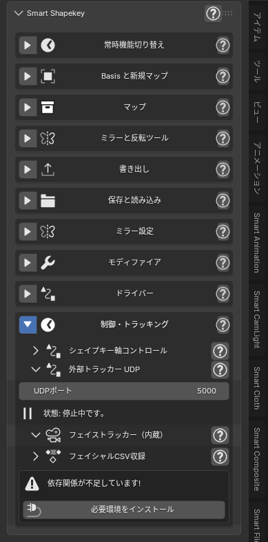
| 表示 | 働き |
|---|---|
| UDPポート | Blender が受け取りを待つポートの番号です（1024〜65535、既定 5000）。送るアプリと同じ番号にします。 |
| 状態の行 | 「状態: 停止中です。」か「状態: 有界・集約方式で待受中です。」が出ます。 |
- グループを作り、送るアプリを用意します。
- 「UDPポート」を送るアプリと同じ番号にします。
- 「常時機能切り替え」で「外部トラッカー UDP」を「有効」にします。
- 終わったら「無効」に戻します。
5-21. フェイストラッカー（内蔵）
ウェブカメラから顔の点（ランドマーク）を読み、シェイプ軸のグループをその場で動かします。この欄のいちばん上には、顔の収録を焼き込む「フェイシャルCSV収録」もあります。
場所「制御・トラッキング」 ＞ 「フェイストラッカー（内蔵）」
| 表示 | 働き |
|---|---|
| 依存関係が不足しています! | ウェブカメラの読み取りに要る部品が無い時に出ます。 |
| 必要環境をインストール | 必要な部品が足りない時だけ出ます。押した時だけネットにつなぎ、OpenCV と MediaPipe を Blender の設定フォルダーへ入れます。足りない間は、「カメラ」から下の欄は出ません。 |
| カメラ | ウェブカメラの番号です。1 台目は 0 です。 |
| 状態の行 | 止まっている時は「状態: 明示的に開始するまでは停止したままです。」、動いている時は FPS が出ます。 |
| 参照マップ | ランドマークの番号の画像を、OS の既定の画像ビューアで開きます。 |
- 初めての時は「必要環境をインストール」を押します。
- 「カメラ」の番号を選びます。
- 「ライブ対象グループ」で行を足し、オブジェクトとグループを選びます。
- 「トラッカー設定」でプリセットを当て、軸ごとに調整します。
- 「常時機能切り替え」で「フェイストラッカー（内蔵）」を「有効」にすると開始します。
5-22. フェイシャルCSV収録
収録した ARKit 52 表情（Apple の決まりの、顔の表情の 52 種類の係数）の CSV や録画の動画を、顔リグのコントローラーの骨か、顔メッシュのシェイプキーへアクション（キーの集まり）として焼き込みます。収録のままの RAW と、手で直す用の EDIT の 2 つのアクションができます。顔リグを作るための道具もここにあり、グループごとに「？」付きの見出しがあります。
場所「フェイストラッカー（内蔵）」 ＞ 「フェイシャルCSV収録」
| 表示 | 働き |
|---|---|
| 表情リグ | 顔のコントローラーを持つアーマチュア（骨の集まり）を指定します。骨への取り込み・頭の回転・初期形状・ARKit リグの欄で使います。 |
| 結果の行（いちばん下） | 直前の操作の結果です。最初は「未取り込み」と出ます。操作のたびにここを読みます。 |
- オブジェクトモードにし、作業の写しを別名で保存します。
- 「表情リグ」を選びます。
- 完成したモデルへ収録を入れる時は、「収録の取り込みの設定」→「校正（EDITだけ）」→「取り込みと RAW／EDIT」の順に使います。
5-23. 初期形状の生成
Auto-Rig Pro（ARP）の顔リグのポーズから、ARKit 52 表情の下書きのシェイプキーを作ります。リグを作る段階の道具です。
場所「フェイシャルCSV収録」 ＞ 「初期形状の生成」
| 表示 | 働き |
|---|---|
| 顔制作コピーを書き出す | 選んだ顔の部品とリグを、別の .blend に書き出します。開いているファイルは変わりません。 |
| 初期形状の生成強度 | リグのポーズの強さの倍率です（0.1〜3、既定 1）。 |
| 独自ポーズレシピ（任意） | 52 表情のポーズの作り方を書いた JSON です。空なら同梱のレシピを使います。 |
| ARPから52表情の初期形状を生成 | レシピの通りにリグを動かし、その形を ARKit 名のシェイプキーとして作ります。できるのは下書きです。 |
| 初期表情へ補正プリセットを反映 / 保管した初期表情へ戻す | .ssfacial の補正を初期形状へ当てる / 当てる前に保管した形へ戻します。 |
| 舌の開口補助上限 | 舌の入力に応じて足す顎の開きの上限です（0.01〜1、既定 0.5）。収録のアクションの係数は変えません。 |
| 舌の開口補助を生成 / 開口補助を除去 | 舌の入力で顎が少し開く補助を作る / この道具が作った補助だけを消します。 |
5-24. 補正キー（2 つの入力）
2 つの ARKit の表情が同時に効いた時（例：jawOpen と tongueOut）の形のずれを直す「補正キー」を作り、2 つの入力の値で自動に効くようドライバーでつなぎます。ドライバーは Blender 標準の式なので、このアドオンが無くても再生できます。
場所「フェイシャルCSV収録」 ＞ 「補正キー（2 つの入力）」
| 表示 | 働き |
|---|---|
| 補正の応答方式 | 「BOX補正」（2 つの中心から離れるほど弱まる）・「入力に合わせて増加」・「1つ目入力・2つ目解除」・「範囲内を保持するBOX」から選びます。既定は「BOX補正」です。 |
| 補正キー | 作る・つなぐ補正キーの名前です。 |
| 1つ目のARKit入力 / 2つ目のARKit入力 | 補正のきっかけになる 2 つの ARKit の名前です（既定 jawOpen と tongueOut）。違う 2 つにします。 |
| 1つ目の中心値 / 2つ目の中心値 | 補正が一番強く効く、2 つの入力の値です（0〜1、既定 0.5）。「入力に合わせて増加」の時は「1つ目の最大補正値」「2つ目の最大補正値」と出ます。 |
| プレビュー時に他を0へ戻す | オンだと、プレビューの時に 2 つ以外の ARKit の値を 0 にします。既定はオンです。 |
| 選択部品の2入力値を揃えてプレビュー / 選択部品のARKit値をゼロへ戻す | 2 つの入力を中心の値にして混ざり方を見る / 選んだ部品の ARKit の値を 0 にします。 |
| 表情ミックスを保存 / 表情ミックスを読み込む | 今の ARKit の値を .ssmix に保存する / 読んで選んだ部品へ当てます。 |
| 補正の半径 | 中心からどこまで効かせるかです（0.01〜1、既定 0.5）。「BOX補正」と「範囲内を保持するBOX」の時だけ使えます。 |
| 第一入力の開始値 / 第二入力の開始値 | 「入力に合わせて増加」の時だけ出ます。補正が増え始める値です。最大補正値より小さくします。 |
| 編集目標キー | 直す形を入れておくシェイプキーの名前です。 |
| ミックスを編集目標にする | 今の混ざった形を「編集目標キー」として保存します。これを正しい形に直します。 |
| 取り込んだ舌先を整形・各倍率・最大移動量 | 取り込んだ編集目標の舌の形を、数値で整えるための設定です。「取り込んだ舌先を整形」がオンの時は舌先の幅・厚み・短縮量など、オフの時は目標の横幅・奥行き・厚みの倍率や舌先の上下移動などが出ます。「最大移動量」は、整形で 1 つの頂点が動ける最大の量です（既定 0.006）。 |
| 編集目標を舌根固定で整形 | 上の整形の設定を、取り込んだ編集目標へ当てます。舌の根元は動かしません。 |
| 編集目標から補正キーを作成 | 直した差を新しい補正キーにし、2 つの入力につなぎます。 |
| 補正キーを2表情に接続 / 補正ドライバーの接続を解除 | 既にある補正キーをつなぐ / この道具が作ったドライバーだけを外します（形は残ります）。 |
- オブジェクトモードで、補正するパーツ（例：舌）をアクティブにし、入力の ARKit キーを持つパーツ（例：顔）も一緒に選びます。
- 応答方式・補正キーの名前・2 つの入力を決めます。
- 「選択部品の2入力値を揃えてプレビュー」で混ざり方を見ます。
- 「ミックスを編集目標にする」を押し、編集目標キーを正しい形に直します。
- 「編集目標から補正キーを作成」を押します。
5-25. 表情・補正プリセット
顔の部品の ARKit の表情の形と、この道具が作った補正キーを 1 つの .ssfacial ファイルに保存し、対応するメッシュへ当てます。
場所「フェイシャルCSV収録」 ＞ 「表情・補正プリセット」
| 表示 | 働き |
|---|---|
| 表情・補正を保存 | .ssfacial ファイルを書きます。 |
| 選択した部品だけ保存 | 保存のダイアログの欄です。オンにすると、選んだ部品にある表情だけを保存します。オフの時は、選んだ全体に 52 表情がそろっている必要があります。 |
| 表情・補正を適用 | ファイルの形と補正を、選んだメッシュへ足します。 |
5-26. 口内の接触検査
舌が歯や顔の内側に食い込んでいないかを、三角形の交差の数で調べます。形とアクションは変えません。
場所「フェイシャルCSV収録」 ＞ 「口内の接触検査」
| 表示 | 働き |
|---|---|
| 選択部品の口内交差を検査 | アクティブな舌と、選んだ顔・歯の三角形の交差を数えます。報告はテキストに保存されます。 |
| アクション検査開始 / 次のキー4点 | 割り当てた ARKit のアクションを、キーのある時刻だけ 4 点ずつ調べます。接触が見つかると止まります。「次のキー4点」は続きがある時だけ押せます。 |
| 交差した相手部品 / 交差例の番号（0始まり） | 報告にある相手の部品の名前と、どの交差の例かを入れます。 |
| 補正目標の交差した面頂点を選択 | 編集目標で、その交差の元の面の頂点を選びます。 |
| 交差面の内部標本を調べる | 報告された交差面の中を、決まった数だけ調べます。 |
- オブジェクトモードで舌をアクティブにし、顔と上下の歯も選びます。
- 「選択部品の口内交差を検査」を押します。
- 結果の行とテキストを読みます。
5-27. 収録の取り込みの設定
収録をどこへ書くか、既にあるアクションをどう扱うか、どのフレームから始めるかを決めます。
場所「フェイシャルCSV収録」 ＞ 「収録の取り込みの設定」
| 表示 | 働き |
|---|---|
| CSVの全表情キーを必須にする | 「シェイプキー」の時だけ出ます。オンだと、収録の表情に合うキーが無い時に取り込みを止めます。既定はオンです。 |
| 既存アクションを残す | オンだと、今のアクションを残して新しいテイクを作ります。既定はオフで、オフの時にリグへ体のアクションが既にあると、取り込みは断られます。オンにするのがおすすめです。 |
| 取り込み先 | 「骨」は ARKit のコントローラーの骨へ、「シェイプキー」は顔メッシュの既存の ARKit シェイプキーへ書きます。既定は「骨」です。完成したリグへ入れる時は「骨」にします。 |
| 開始フレーム / フレームのオフセット値 | 「骨」の時だけ出ます。最初の標本を置くフレームと、さらにずらす量です。 |
5-28. 校正（EDITだけ）
収録の値（0〜1）を、この顔に合う強さへ直します。EDIT にだけ掛かり、RAW は収録の値のままです。
場所「フェイシャルCSV収録」 ＞ 「校正（EDITだけ）」
| 表示 | 働き |
|---|---|
| 骨の校正（EDITのみ） | 「骨」の時の校正の入切です（既定はオン）。表を読まない時は同梱の汎用の表が使われ、「使用中: 汎用校正表（本人用は任意）」と出ます。 |
| 係数別校正（EDITのみ） | 「シェイプキー」の時の校正の入切です。先に表を読んでからオンにします。 |
| 校正表を読む | JSON か CSV の校正表を読みます。 |
| JSON / CSV | 読んだ表を保存します。 |
| neutralの下書きJSON | 「骨」の時だけ出ます。最後に取り込んだ CSV の無表情の区間から、下書きを書き出します。 |
| 鼻しわが0なら推定 / 頬の持ち上げが0なら推定 | 「骨」の時だけ出ます。その列の収録がほぼ 0 の時だけ、他の表情から推定します。すぐ下の「鼻しわ推定の係数k」「頬の持ち上げ推定の係数k」がその強さです（既定 0.6・0.8）。 |
5-29. 校正表を作る
何本もの収録（RAW の CSV）の値の分布から、係数ごとの校正表を作ります。同じ収録と同じ設定なら、いつも同じ表になります。
場所「フェイシャルCSV収録」 ＞ 「校正表を作る」
| 表示 | 働き |
|---|---|
| 収録の一覧と ＋ / － / ごみ箱 | 数える CSV を足す（「収録を足す」）・選んだ 1 本を外す（「収録を外す」）・全部外します。ファイルには触りません。 |
| 分布を数える | 一覧の収録を全部読み、コマ数を数えます。何も書きません。 |
| 前の表（任意） | 今使っている校正表です。どの決まりにも当たらない係数の行は、この表から写します。 |
| 狙った表情の最大（任意） | その表情をわざと作った時の、係数ごとの一番大きな値の JSON か CSV です。 |
| 作った表を取り込みに使う | オンだと、作った表を取り込みの校正表として入れます。既定はオンです。 |
| 校正表を作る | 新しい表の JSON と、同じ名前に _report を付けた JSON を書きます。既にある名前には上書きしません。 |
5-30. 決め方（決まりの値）
「校正表を作る」が使う決まりの値を、全部ここに置きます。「校正表を作る」はこの値を読むだけです。
場所「校正表を作る」 ＞ 「決め方（決まりの値）」
| 表示 | 働き |
|---|---|
| v5 の決め方 / v4 の決め方 | 決まりの値をまとめて入れるボタンです。おすすめは「v5 の決め方」です。 |
| そのほかの数値の欄 | 分位点の桁・jawOpen の折れ点・視線や眉の分位点・真顔の区間などです。理由がある時だけ変えます。 |
5-31. 取り込みと RAW／EDIT
収録（CSV、またはここで解析する録画の動画）を取り込み、RAW と EDIT のアクションを切り替えます。
場所「フェイシャルCSV収録」 ＞ 「取り込みと RAW／EDIT」
| 表示 | 働き |
|---|---|
| EDITの平滑化（秒） | EDIT にだけ掛けるなめらかさです（0〜1、既定 0）。 |
| 部位ごとの強さ | 「シェイプキー」の時だけ出ます。「目の強さ」「口・顎の強さ」「眉の強さ」「頬・鼻の強さ」「舌の強さ」の倍率です（0〜3）。1 でそのままです。 |
| フェイシャルCSVをベイク | CSV（20 MiB まで）を選んで取り込みます。ファイル選択の画面の右側で設定を確かめてから確定します。 |
| 録画動画をフェイシャルへベイク | mp4 / mov / mkv / avi / webm の動画を解析して取り込みます。長さは 30 秒までで、キーが多い時はさらに短くなります。舌と頭の回転は取れません。 |
| RAW / EDIT | 収録の値のアクションと、手で直す用のアクションを切り替えます。制作には EDIT を使います。 |
5-32. 取り込みの点検
収録の係数ごとに、取り込みが受け取る値（RAW）と、今の設定で EDIT になる値を一覧にします。届かない係数・1.0 に張り付く係数・山のコマを見つけるのに使います。
場所「フェイシャルCSV収録」 ＞ 「取り込みの点検」
| 表示 | 働き |
|---|---|
| 点検する収録のCSV | 点検する CSV です。 |
| タイムコードのフレーム基数 | 収録の時刻の fps です（既定 60）。 |
| 係数の単位 | 「タイムコードのフレーム基数」のすぐ下の欄です。収録の値が 0〜1 か、100 で割る物かを選びます。 |
| 点検の真顔の始まり（秒） / 点検の真顔の終わり（秒） | 真顔の部分です（既定 0〜1 秒）。 |
| 届いたとみなす値 | EDIT の最大がこれより下の係数を「届かない」とします（既定 0.3）。 |
| 張り付きとみなす値 / 張り付きの割合の上限 / 真顔の残り値の線 | 1.0 に張り付く係数と、真顔で値が残る係数を見つける線です（既定 0.99・0.01・0.1）。 |
| 山へ移る時の開始フレーム | 「シェイプキー」の時だけ出ます。取り込みに使った開始フレームを入れます。 |
| 点検する | 点検して一覧を作ります。アクションも形も変えません。 |
| 一覧（係数・最大・張付・山・真顔） | 「点検する」の結果です。行を押して係数を選びます。 |
| 山のコマへ移る | 選んだ係数の、RAW の一番大きな値のコマへ移ります。 |
| JSON / CSV | 全部の列の表を新しいファイルへ書きます。 |
5-33. 頭の回転CSV
頭の回転（ピッチ・ヨー・ロール）の CSV を、リグの頭のコントローラーの骨へ、RAW と EDIT のアクションとして焼き込みます。体の動きに足し合わせます。
場所「フェイシャルCSV収録」 ＞ 「頭の回転CSV」
| 表示 | 働き |
|---|---|
| 頭コントローラー | 回転を受ける骨の名前です（既定 c_head.x）。 |
| 頭回転CSVをベイク | CSV を選んで取り込みます。ファイル選択の画面で、角度の単位（ラジアン／度）・軸・符号を決めます。 |
| 頭RAW / 頭EDIT | 収録のままの頭の回転と、手で直せる頭の回転を切り替えます。 |
| 頭収録の接続を解除 | 頭の収録のつなぎを外します。体のアクションと保管したテイクは残ります。 |
5-34. ARKitリグの焼きと戻し
ARKit のスライダー（52 本の骨）で動く顔リグで、2 つのモードを切り替えます。「表情モード」はスライダーが顔を動かす状態です。「手付けモード」は、スライダーの結果を全部のコマのキーとして顔の骨に書き込み（焼き）、普通のキーで手で直せる状態です。
場所「フェイシャルCSV収録」 ＞ 「ARKitリグの焼きと戻し」
| 表示 | 働き |
|---|---|
| リグの正本JSON | このリグの名前や作りを書いた正本のファイルです。ボタンを押すたびに読みます。 |
| シーン＋キー / 範囲を指定 | 「シーン＋キー」（既定）か「範囲を指定」のボタンで選びます。「シーン＋キー」は、シーンの範囲と、スライダーにキーがあるコマの範囲を合わせて焼きます。 |
| 焼く最初のコマ / 焼く最後のコマ | 「範囲を指定」の時だけ出ます。 |
| 一部だけ焼くのを許す | 「範囲を指定」の時だけ出ます。範囲の外の表情は焼かれません。既定は切です。 |
| 焼いた後に自己確認 | 焼く前と後で顔の形を比べ、一番大きい動きを出します。既定は入です。 |
| 顔を手付け用に焼く | 手付けモードにします。確認が出ます。 |
| 表情モードへ戻す | 焼きが書いた物だけを消し、焼く前のキーと値に戻します。確認が出ます。 |
| リグの状態の行 | 「リグ：表情モード」「リグ：手付けモード（この道具で焼いた状態）」「リグ：未選択」などが出ます。 |
- 先に .blend を別名で保存します。
- 「表情リグ」と「リグの正本JSON」を選びます。
- 「シーン＋キー」か「範囲を指定」を選び、「顔を手付け用に焼く」を押して OK を押します。
- 顔のコントローラーの骨にキーを打って直します。
- スライダーに戻す時は「表情モードへ戻す」を押します。
5-35. ARKitリグの検査と当て直し
ARKit のリグのスライダー・アクションの拘束・顔の骨のつながりを「リグの正本JSON」と比べ、他の道具が消したり変えたりした所を元へ戻します。
場所「フェイシャルCSV収録」 ＞ 「ARKitリグの検査と当て直し」
| 表示 | 働き |
|---|---|
| 正本と比べて検査 | 違いを並べるだけで、何も変えません。件数がボタンの下に出ます。 |
| 正本から当て直す | 足りない物を足し、違う物を直します。確認が出ます。 |
- 「正本と比べて検査」を押します。
- 違いが 0 件でなければ「正本から当て直す」を押し、OK を押します。
- もう一度「正本と比べて検査」を押し、0 件になったことを確かめます。
5-36. 材質の色補正
選んだ 1 つのメッシュの材質を複製して直します。画像テクスチャを一色に置き換えたり、リムの光を弱めたりします。元の共有の材質はそのまま残ります。
場所「フェイシャルCSV収録」 ＞ 「材質の色補正」
| 表示 | 働き |
|---|---|
| 置き換える画像ノード | 置き換える画像テクスチャのノードです。最初は空です。一覧から選びます。 |
| 補正色（線形RGBA） | 画像の代わりに使う一色です。 |
| 選択部品の材質を複製して色補正 | このメッシュ用の材質の写しを作り、補正色につなぎ替えます。 |
| リム合成／発光ノード | リムの光のノードです。最初は空です。一覧から選びます。既定のトゥーンの材質では最後の合成のノード（日本語の設定で「最終トゥーン色.001」）、PBR の材質では発光のノード「Rim Light Overlay」を選びます。 |
| リムの倍率 | リムの入力に掛ける倍率です（0〜1、既定 0.5）。 |
| 選択材質のリムを調整 | リムの光を倍率で弱めます。 |
| 選択部品を元の共有材質へ戻す | スロットに元の共有の材質を戻します。 |
実例材質を複製して、画像を一色に置き換える（スザンヌで試した様子）
選んだメッシュの材質を複製し、画像テクスチャを一色に置き換えます。元の材質はそのまま残るので、いつでも戻せます。
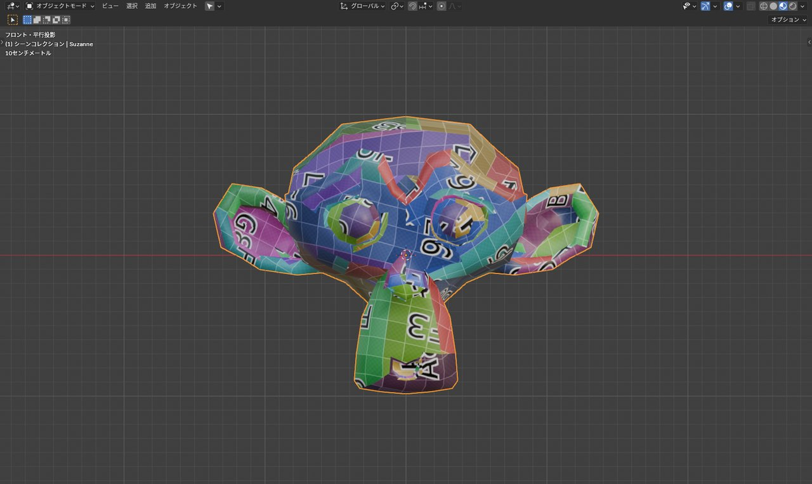
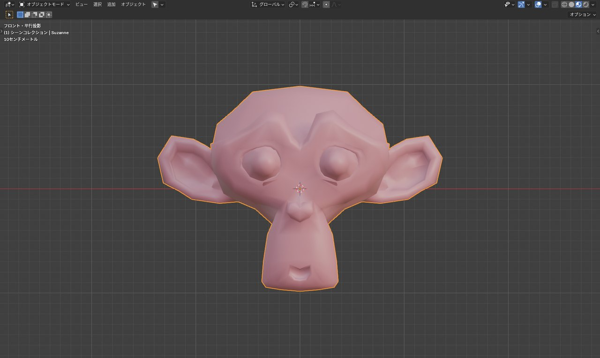
- オブジェクトモードで、メッシュを 1 つだけ選びます。
- 「材質の色補正」の「置き換える画像ノード」で画像テクスチャのノードを選びます。
- 「補正色（線形RGBA）」で色を決め、「選択部品の材質を複製して色補正」を押します。
- 戻す時は「選択部品を元の共有材質へ戻す」を押します。
見どころ：スザンヌの表面を見てください。色の格子模様の画像が補正色の一色に変わり、戻すボタンで元の格子模様に戻ります。
実例リムの光を弱める（スザンヌで試した様子）
縁を光らせる発光のノードの強さを、倍率で弱めます。材質の写しを作って直すので、元の材質は変わりません。
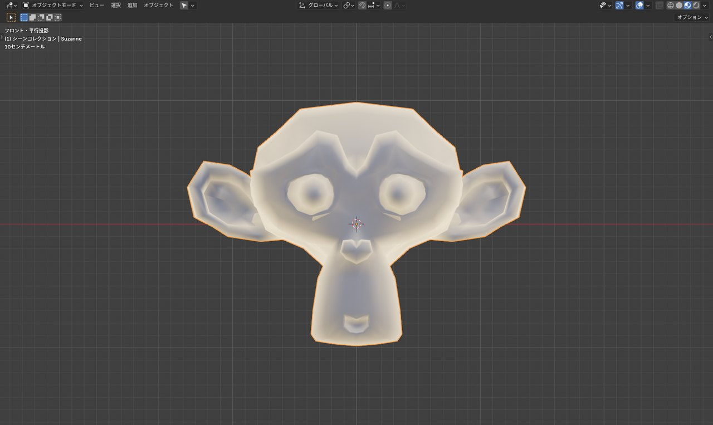
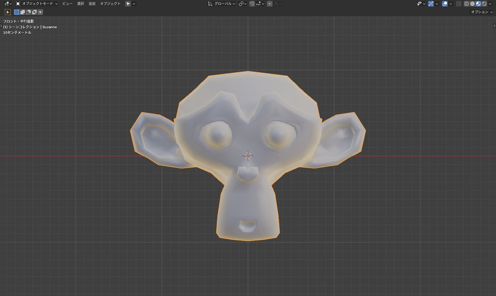
- オブジェクトモードで、メッシュを 1 つだけ選びます。
- 「リム合成／発光ノード」で、リムの光のノードを一覧から選びます。
- 「リムの倍率」を 0.2 にして、「選択材質のリムを調整」を押します。
- 戻す時は「選択部品を元の共有材質へ戻す」を押します。
見どころ：スザンヌの縁を見てください。強く光っていた縁が、倍率の分だけ暗くなります。
5-37. ライブ対象グループ
ライブのフェイストラッカーの出力を受けるオブジェクトと、シェイプ軸のグループを決めます。1 行が「オブジェクト 1 つ＋グループ 1 つ」です。
場所「フェイストラッカー（内蔵）」 ＞ 「ライブ対象グループ」
| 表示 | 働き |
|---|---|
| 対象の一覧 | トラッカーが使う行です。「<選択>」と出る時は、そのオブジェクトにまだグループがありません。 |
| ＋ / － | 行を足す / 消します。消してもオブジェクトとグループは変わりません。 |
5-38. トラッカー設定
選んだ対象のグループが顔にどう反応するかを、プリセットを出発点にして決めます。見出しには「トラッカー設定: グループ名」と出ます。
場所「フェイストラッカー（内蔵）」 ＞ 「トラッカー設定」
| 表示 | 働き |
|---|---|
| 口 | 口の動きを読む初期値を当てます。 |
| 目 | 目（虹彩）の動きを読む初期値を当てます。 |
| まばたき | まばたきを読む初期値を当てます。 |
5-39. X 軸マッピング / Y 軸マッピング
ランドマークの生の計測値を、グループの X か Y の値に変えます。X と Y は別々に設定します。
場所「トラッカー設定」 ＞ 「X 軸マッピング」「Y 軸マッピング」
| 表示 | 働き |
|---|---|
| トラッキング方式 | 「なし」「2点距離」「1点投影」「虹彩」から選びます。 |
| 点 A / 点 B | 使うランドマークの番号です。「参照マップ」で調べます。 |
| 下限 / 上限 | 生の入力の範囲です。 |
| 最小を取得 / 最大を取得 | 今の生の値を、下限・上限へ書きます。無表情で最小、一番強い表情で最大を取ります。 |
| 最小出力 / 最大出力 | ジョイスティックへ送る範囲です。 |
| ゲイン / カーブ（指数） | 出力の倍率（既定 1）と、反応の指数（既定 1.2）です。 |
| フィルターを有効化 / スムーズ係数 | 時間方向のなめらかさです。「スムーズ係数」はフィルターがオンの時だけ出ます（既定 0.15）。 |
そのほかの画面

6. よく使う手順
表情の形を作ってシェイプキーにする
1 つの顔のメッシュで表情をいくつも作り、ふつうのシェイプキーとして書き出す。
- メッシュを選び、無表情の形にします。オートキーは切っておきます。
- 「Basis と新規マップ」を開き、「ベースを設定」を押して確定します。
- 「新規」を押し、名前（例：smile）を入れて確定します。
- 編集モードで笑顔の形に直します。スカルプトモードで直した時は、オブジェクトモードに戻します。
- 「マップ」の一覧で Basis を押します。今の編集が smile に保存され、形が Basis に戻ります。
- 3〜5 を繰り返して表情を増やします。
- 「書き出し」を開いて「書き出し」を押し、「出力先」を「シェイプキー」にして OK を押します。
結果：プロパティの「オブジェクトデータ」→「シェイプキー」に、作った表情のシェイプキーが並びます。
片側だけ作った表情を左右にそろえる
片側だけ直したマップを、反対側へ写して左右対称にする。
- 「マップ」の一覧で、片側だけ形を作ったマップを押します。
- 編集モードで全部の頂点を選びます。
- 「ミラーと反転ツール」で、矢印が形を作った側から始まるボタンを押します。
- 正面から見て、左右を見比べます。
結果：反対側の頂点に同じ形が写り、マップに保存されます。
マップを別のメッシュへ持って行く
作ったマップをファイルに保存し、別の .blend の同じ作りのメッシュ、または UV の開き方が同じメッシュへ読み込む。
- マップのあるメッシュを選び、「保存と読み込み」の「全て保存」を押してファイルに保存します。
- 持って行く先のメッシュを選び、「読み込み」を押してファイルを選びます。
- 開いた窓で読み込むマップにチェックを入れて OK を押します。
- 「マップ」の一覧で行を押して、形を確かめます。
結果：持って行く先のマップと Basis がファイルの物に置き換わり、メッシュの形は読み込んだ Basis になります。
シェイプキーを残したままモディファイアを適用する
シェイプキーのあるメッシュに、スムーズなどのモディファイアを適用する。
- .blend の控えを保存します。
- メッシュを選び、オブジェクトモードにします。
- 「モディファイア」→「シェイプキー保持で適用」を開きます。
- 「モディファイアを選択」を押し、適用したい物だけにチェックを付けて OK を押します。
結果：選んだモディファイアが一覧から消え、シェイプキーは全部残ります。
ボーンの回転でシェイプキーを動かす
ボーンを 0〜45 度回した時に、シェイプキーが 0 から 1 になるようにする。
- シェイプキーの値を右クリックし、「ドライバーを追加」を選びます。変数の名前を var にし、ボーンの回転のチャンネルを指定します。
- シェイプキーを持つメッシュを選んだまま、「ドライバー」→「ドライバーヘルパー」を開き、ROT を選びます。
- 「最小」を 0、「最大」を 45 にします。
- 「式を生成」を押し、出た式をコピーします。
- ドライバーの「式」欄に貼り付けます。
結果：ボーンを回すと、0〜45 度の間でシェイプキーの値が 0 から 1 に変わります。
ジョイスティックで口の形を混ぜる
1 つの X/Y のハンドルで、複数の口のシェイプキーを混ぜて動かす。
- 口のシェイプキーを持つメッシュを選びます。
- 「制御・トラッキング」→「シェイプキー軸コントロール」→「グループ」で「最初のグループを作成して設定開始」を押します。
- 「マッピング」の ＋ で行を足し、「マッピング設定」でシェイプキーと目標の X・Y を決めます。シェイプキーの数だけ繰り返します。
- 「ハンドル / 値」の「X（ドライブ可）」「Y（ドライブ可）」を動かして確かめます。
- 見ながら動かしたい時は、「常時機能切り替え」で「シェイプ軸 HUD」を「有効」にします。
結果：ハンドルを目標の点に近づけると、そのシェイプキーの値が上がります。
顔の収録 CSV を顔リグの骨へ焼き込む
ARKit の表情の CSV を、完成した顔リグにアクションとして入れる。
- 作業の写しを別名で保存し、オブジェクトモードにします。
- 「フェイストラッカー（内蔵）」→「フェイシャルCSV収録」を開き、「表情リグ」を選びます。
- 「収録の取り込みの設定」で「取り込み先」を「骨」にし、「既存アクションを残す」をオンにします。
- 「校正（EDITだけ）」の「骨の校正（EDITのみ）」がオンであることを確かめます。
- 「フェイシャルCSVをベイク」を押して CSV を選び、確定します。
- 結果の行を読み、「RAW」「EDIT」を押して見比べます。
結果：収録のままの RAW と、手で直す用の EDIT の 2 つのアクションができます。
7. 困った時
- パネルに 1 行しか出ません。
- メッシュを選んでいないか、オブジェクトモード・編集モード以外になっています。メッシュを 1 つ選び、オブジェクトモードか編集モードにしてください。
- マップの一覧を押しても形が切り替わりません。
- オートキー（自動キー挿入）がオンの間は切り替えられません。オフにしてください。また、「マップ」のモードのボタンが「編集」の時は、行を押しても形は変わりません。「選択」に戻してください。シェイプキーのあるメッシュでは、編集モードで押すと断られます（オブジェクトモードで押します）。シェイプキーの固定がオンの間は見えません。
- 書き出したシェイプキーに、最後に直した形が入っていません。
- 編集した形は、別のマップへ切り替えた時に保存されます。書き出す前に、一覧で別のマップを押してから「書き出し」を使ってください。
- 「読み込み」を押したら、作ったマップが消えました。
- 「読み込み」は、今あるマップ（Basis 以外）を消し、シェイプキーからマップを作り直します。Ctrl+Z で戻せます。
- 「シェイプキー保持で適用」が失敗します。
- シェイプキーごとに違うメッシュを作るモディファイア（デシメート・ブーリアン・ベベル・リメッシュなど）は適用できません。元のメッシュは変わらずに中止されます。マップのあるメッシュも断られます。必要なら書き出してから「すべて削除」を押します。
- フェイストラッカーや UDP が開始しません。
- カメラや UDP のポートを他のアプリが使っていると開けません。先に他のアプリを閉じるか、別のポート番号にしてください。フェイストラッカーは、初めての時に「必要環境をインストール」を押す必要があります。
- 使わない時に動き続けて重くなりませんか。
- 背景で動く機能は、「常時機能切り替え」で「有効」にした時だけ動きます。「無効」の機能は止まります。
- 操作を戻すには。
- ほとんどの操作は Ctrl+Z で戻せます。ただし、Blender の外へ書き出したファイルは Ctrl+Z では消えません。
アドオンが出ない・日本語にならない、など全部のアドオンに共通のことは、全体仕様書の「困った時」を見てください。
8. 用語集
- シェイプキー
- メッシュの基準の形からの「形の変化」を保存し、0〜1 の値で混ぜられる仕組みです。表情などに使います。
- Basis
- シェイプキーやマップの基準になる形です（例：無表情）。
- マップ（チャンネル）
- このアドオンの中に保存した、Basis からの形の差です。番号（チャンネル番号）が付きます。
- モディファイア
- メッシュに後から掛ける変形や加工です。適用すると、メッシュそのものに反映されます。
- ドライバー
- ある値を、別の値（ボーンの回転など）から式で自動に決める仕組みです。
- HUD
- 3D ビューの上に重ねて出す操作盤や表示です。
- UDP
- ネットワークで値を送る方式の一つです。他のアプリから値を受け取るのに使います。
- ランドマーク
- フェイストラッカーが顔の上で読む点です。点ごとに番号があります。
- ARKit 52 表情
- 顔の表情を 52 種類の係数（0〜1）で表す決まりです。jawOpen（口を開く）などの名前があります。
- アクション
- キーフレームの集まりです。アニメーションの中身です。
- RAW / EDIT
- 取り込みで作る 2 つのアクションです。RAW は収録の値のまま、EDIT は校正などを掛けた、手で直す用です。
- 校正表
- 収録の値を、その顔に合う強さへ直すための、係数ごとの表です。
- 補正キー
- 2 つの表情が同時に効いた時の形のずれを直すための、追加のシェイプキーです。
- NLA
- アクションを重ねたり並べたりする仕組みです。効いているトラックがあると、取り込みは止まります。
- オートキー
- 値を変えると自動でキーを打つ機能です。オンの間はマップを切り替えられません。
9. 付録：版と確認値・できないこと
| アドオン | SmartShapekey Suite（smart_shapekey_suite） |
|---|---|
| 版 | 1.0.0 |
| ZIP | SmartShapekeySuite_1.0.0.zip |
| 大きさ | 4,246,621 バイト |
| SHA256 | 7d8e3a241b8fd5a21592a9dfe7fc229be2896ace2fde76f5bfb180e3f2f9eeae |
できないこと・注意
- アクティブなオブジェクトがメッシュで、オブジェクトモードか編集モードの時だけパネルの中身が出ます。
- マップは、ローカルで他のオブジェクトと共有していないメッシュにだけ作れます。
- 「ベースを設定」の後に頂点の数やつながりを変えると、形の保存・切り替え・書き出しが断られます。
- オートキーがオンの間は、マップを切り替えられません。
- Blender の外へ書き出したファイル（JSON・CSV・.ssfacial・.ssmix など）は Ctrl+Z では消えません。
- シェイプキー保持で適用は、シェイプキーごとに違うメッシュを作るモディファイア（デシメート・ブーリアン・ベベル・リメッシュなど）と、マップのあるメッシュには使えません。
- シェイプキーのあるメッシュでは、マップの切り替えはオブジェクトモードで行います。絶対シェイプキーではマップの形を見せられません。
- 内蔵フェイストラッカーと動画の取り込みには、必要環境のインストール（ネット接続）が要ります。
- 録画の動画の取り込みは 30 秒まで、CSV は 20 MiB までです。動画からは舌と頭の回転は取れません。
- 取り込みは RAW と EDIT を合わせて 25 万キーまでです。効いている NLA のトラックがあると取り込めません。
- 初期形状の生成で作る形は下書きです。そのままでは完成の品質になりません。
- 同梱の校正表と決まりの既定値は一般的な物で、個人に合わせた物ではありません。数値が整っても、見た目は目で確かめます。
- 口内の接触検査は三角形の交差を数えるだけで、見えるか・透けるかは判定しません。
- 頂点の並びが違うメッシュへの読み込みでは、UV から復元する位置と、読み込み先の元の位置の最大のずれも確認します。ずれが保存した Basis の外接箱の対角長の 0.5% を超えると、メッシュを変える前に停止します。局所的な島のずれ・ゆがみ・UV を 0.98 倍にした例も停止対象です。この許容値より小さい差まで完全に見分ける保証ではないため、読み込み後の形は目でも確認してください。
SmartShapekey Suite 解説書 v1.0.0 ／ 2026-11-18 作成